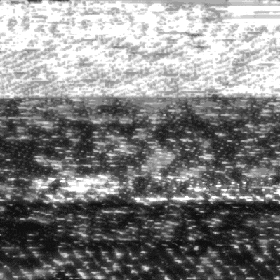

⧠⧠⧠⧠⧠⧠⧠⧠⧠⧠

Posts: #̸̷̷̶̷̨̛͢͝҉҉͟͏̵̧͟͜͡#́͏͢҉̸̶̵̢̧̧̀̀̕͘͜͢͟͟͠͠͡͠͡҉́҉͏̀͏̴̶̶̡̛̛͘̕͢͞͏̷̴̵̡̀͢͞͏̷̴̷̷̸̵̨̧̧̧̛͘̕͜͟͜͞#̶̸̢͝͡͝͝
Points: ?͜͞҉̵̸͜͡͝͠͝͞͞҉̸̨̀͜͡͏͏̴̸̶̢̧̡̡̛̛̕͘͢͠͠͠͏̵̸̷̷̢̛̀́͜͠͝͏̸̸̀͘͢͞͞͏̸̶̴̷̢̧̡̨̡́͟͟͜͞͞҉̸̸̶̸̡̡̢̡̕̕͢͟͠͠͡͠҉̸̴̵̢̢͟͝͏̷́͘͜͡͡͞͏̴̵̵̸̢̀҉͝͞/̴̧̛̀́͘͏̴̢̛͟͞͠҉͘͏̴̸̵̸̵̸̶̶̷̢̡̢̨̧̢̡̨̛́́̀͘̕͟͜͠͞͠͠͏̸̷̡̢̧̧̛͘͜҉̛҉̴̶̸̷̴̶̨̢̛̀͘͘͘̕͢͢͜͠͝͠͝͝͞҉̵̸̢͞͏͝͏̷̨̀̀͟͡҉҉̕
T̸̡̠͎̲̭͋́͌͒̆̈́̀̋̑͘h̸̛̼̱͚̘̲͍̱͎͕̾̂̈́̒͆̽̉͘ȩ̷̯̣̤̮̺͕̼̹̻͈̤̼̫̫̾͂̾͜ͅ ̵̢̨̣̞̥͙̰̺̹̞̜͕̪̗̻̜̌́͐̏̓̐̎̏̎̅̈́̍̈́͒͗̚̕͜q̵̨̡̱̜̘͓̭̯̙̟͎̽̏͗̆u̶͕̹͕͎̺̓͆̌̀̈́̽̆̋̄͌̂͘͝͝a̴̺͙̱̲̦̻̞͈̖̙͙̩̘͈̰͒̇̐́̽̓̌͌̃̀͠i̴̧̡̧͔̰̬̦͓͎̩̺̜͚̳̎͗̄̾̀̄͋̀̀̊̒͊̂̀͝͝ͅn̴͔̟̙͙̫̦̠̦͕̏̏̉̄̏t̷̨̰̳͓͙̼͍̱̟͚̭̝͚̑̓ͅ ̶̞̯͍̫̟̇̈́̍̿̈́̕͝l̸̡̡̨͙͕̗͙͉͍̻̩͈̟͓͈̒͒̔̓͆̈́ͅi̶͙͕̩͈̣̙̥͌͗̏̈̑t̷̠͚̫͎̻͋̊t̸͉̝̰̲͔̜̼͔͑̒̐͒̂̌̽̏̒̇̓̈̍̈̿̒͜͠l̸̢̢̨̩̘̭͖̝͕͍̦̠̹͗͊̑̌̓̌̍̍̃̑͆̒͛͋̉̓̚͜ę̷̺̦̝̈ ̷̫̬̃̀̑͋͗̇̄̇̒̎͆́͠͝͠v̶͔͎̪̈́̅̿̍̊̅͗̍̒͝i̴̧̼̱͈͕̙͖͍̭͚͙̇͂̒͌̀̚͜͝l̴̢̼͔̫͉̝͙̘̜̟̠̙̲̝̓̒̈́̈́̉͋̔̾̃̀͠ͅl̶̝̟͎͖̼̘͓̯̰̮͎͍̜͇̺̅̿͋̔̈́̿́͂͋̚͘a̶͎͍̻̬̘̺͙̻̯̭͓̬͑̊ͅg̴̖͎͎̻͉̓̐̏̋͆̽̂͑́̉́̎͘̚͝͝ḙ̸̻̜͙͚̼̣̙̓͐ ̸̨̡̧̡̯͈̝͓͇̬̙͇̯͖͔̪̞͗̋̎̀͘͠ō̵̲̖͎͔̗̟̜̙͂̀̓̓̍f̴͖̼̙͙͂̆̓̀̿̓́̚ͅ ̷̢̧̛̤͇͚̜̙̭̆̓̓͗̈͋͒̋͒̒͐E̷̢̢̙̹̰̥̲̥̝͚̻̰̩̿͒̈́̏͌͒͋̐̅l̵̡͇̖̫̬̪̠͕̂́͐̔͜͜͝͠d̶̢͖̻̲̰̻̰͉̭̦̳̾̉͆͂̄̀͂̐̕̚r̷̛̬̤̦̖͌̌͌̀̇̃̈̉̕͝ḭ̴̼̫͕͑̀͛̊̐̅̒͐̎̒͘͝d̶̢͔̭̙̦̤͎̏̓̿͂̌̉͌͊͜ǵ̴̨͓͋̽̐̚͠͝ȩ̴͖͇̬͉̖̣̭͎͇͈̺̩̄ͅ ̵̢̭̩̰͕̉͊́͗͗̅̊̕͘s̷̻͖̖̮͈͓̔͒̈́̒̿̈̓̌̑̀͂͌͠͝͠ͅȩ̵̛̛̺͓̣̤̞͉͇͔̖͙̭̱́̃̎͐̽̎͋̂̕͜͠ͅe̶̬̣̎́̈͘̕m̷̠̀̾͋͗́̔̔̔̌̕͝ȩ̵̙̘͎̮͚͔̑́̓͝d̴̡̨̡͔͙̲̭̮̗̳̪̗̥͎̰̑̾̐̿̌̓́̃́̔̋͘ ̷̨͈̼̹͍͍̠̼͎͓̥͙̼̥̂̈͆̄̌̍̒͂͒͒̀̂̒͜l̴̛̛̟̟̻̲̀̓̾͑͆̓̾̌̇͘̚͝i̷̡͔̤̯̣͍̤̖͇̘̣̠̣͚͒͊̈̉̃̒͆̽̆̀̏̀͛͘͝͝ͅḱ̶̻̈ͅȇ̴̢̡̨̢̛̤͚̠̞̯̯̖̯̫̰̰̹͖̚ ̷̬̻̯̟̹̺̄̀̆̑̈́͐̕ţ̵̨̻͎͍̙̙̖͎̱̘̰̤̀̌̐̏͘͜h̷̢͎̳̞̻̐e̷̡̢̩̟͇̤̲̝̘̯͓̹̩̝͎̎̑̎͋͠͝ ̶͔̙̘̪̤͑̍p̸̯̣̤̓́̋̇̏͂̔͝ȩ̸̛̛̫̟̪͉͒́́̓̉̀̆̉͋͜r̶̰̳̘̮̖̪̱̆͛̑͋͒̒̽f̶̛̤̻̤̺̟̬̥̞̹̫̾̇́̌̏͂̎̌̆̔̉͒̔̽̀̕e̶̡̢̼͚̦̭͙͕̋̓̂̃̽͒̃̐̓̈̾c̷̢̮̳̟͖͎̦̞͙͚̪̭̖̲̦͎͑̎̈́̄̑̊̌͘t̵͓̼̮͆͊̾̌̎̔͐̍͂͆̕͜͝ ̵͍̬̞͍̦̦̼̮̘̄͆͌̌͂̊̔͋́̆͆̊̐̂ṕ̸͙̻̦̣̅͆́̋̓́̅̈́͗̿͝͝͠l̸̛͎̻̲͈̲̼̮̀̊͋͊͗͝͝͠͠à̸̝͖̲̯͕͐̓͐͒͠͝ͅć̸̛̼̘͍͕͉͕̦̳̙̤̳̠̙͎͂̃̿͐̐̈́̇̂̾͂͊̂͜͝è̸͖̻͎̮͈̻̪̗̮̣̞̞͚̗̙̎̿̈̉̊͌̒̉̍̐̆̔͝͝ ̴̡̛̛̛̪͔̮̱̺̩͙͔͚͖̌̃̉̽̐́̐̿͌̈́̕͜ͅͅṭ̴̯̠̖̟̜͎̓̋̂̀̑̈́̔͒̃͗͘͜͝o̷͍̞̹̦͇̍̍͑̚͝ ̶̰̏͊̓̿̑͐̃͒͛̽̈́͝e̸̢͚̪͔̦̖̯͈̻͔̓s̵̙̫̫̲̫̣̦̼̱̱͔̈́̅̍̃̅͆͝c̸͓̥͕̙̤̄̒̿̿̓̂̓̈̊͑͝a̸̡̺͙͙̤̝͉͉͖͎̳̜̹̺͖̔̊̋̐̈́̇̆̇̄̚͜p̴̨̥̳͇̼̐̎̚͝ͅȩ̶̰̤̞̞̥̒̅̂̏̽̐̓̏̿̓̅̓͘ ̴̺̗͗̀́t̷̝̭͇͐̀̎̈̇̍̾̐h̷̡̛͔̰̞̼͎̟͚̼̀ͅe̷̡͔̮̠̭̩͙̦̥̳͜͝ ̷̛̦̹̞̉̈́͒͑̈́̆̎́̍̚ḣ̷̡̭͓̱̦̞̼̟̥̩̙̭̲͓͌̂͒͂͗̆̔̅̀̓̕͝u̸̢̧̢̻̪̲͕̲̰̫̦̲̔̿̍̈̈́̓̈́̇̀̄̀͠s̵̡̥͓̤͕͒̔̅̾̓̈́́̈́̽̏̆̐̅̍̕̚͠ͅt̶̨̪̗̼̣͎̰̮̣̳̱̼̬͌͋͋̂̆͌͗̍̌̓̈́̂̈ͅl̶̢̢͕͖̼͓̲̰̗̪̜̲͂͆̐́̋͐̂̄ę̵̰̖͔͇͚̖̓̌̉̈́̉̓̔̏̇̽̕̕ ̴̧̢̡̧̡͔̯̰̰̥̹̲̰̮͊̾̋̅͒̕͜ā̶̡̡̧̛̟͈͈͔̺͓̔̏̔͐͊͐̆͘̚͝͝ṅ̵̢̘̜̩̭̼̰͎͔̰͖̽̈̒̽͗̓́̄͑͑͛̅̃̚͜d̴͕̣͑͐͋̂́̌̋͋͂̚͝ ̷̼̱͈̳͇̦͍̺̹̌͌̎̇͊̒͒̕̚͜b̸̡̛̛͚̫̦̦̥̦̥̖̺̦̀͆͊̾͌̊͂̈́̋̏͐̕̚ͅu̷̬͖͙̤̺̘̥͍̔̎̆͛̈́͋̈́͌͗̊͒͂̔͜͝s̸̠̺̰̲̈͂̄̔́̂͑̐̄͘̚͝͠͠ţ̶̡̢̙͚̺̫̟̳̗̦͕͎̼̥͆̔̾͆́͌̇͒̂̈̋́͜ĺ̵͔̝̲̩̥̇̉̽̇͆̔̔̽̿ē̶̮͎̼̭͕̤̝͉͙͛͒͋͗͛͆̈̈́̅͆̎̎̓͊͘͠ ̵̨̝͙̜̩̟̹͚͙̪̼̣͎͕̓̏͗̂̒͜o̵̠̹̐̆̇͌̑̈́̿̂͋f̴͚͖̲̠̻̙̅̍̒̓͑̈̈̉̌̄̃́̚̚͜ ̸̡͍̱͚̻͙͚̤̙̻̭̹̪̌̄̑͒̂͋̓ͅc̶͓͚̗̥͕͓͈̭̳͙͔̮͉͔̝̆͋̃̌͛̚͠į̶̳̟̳̫͖͊̎̚ͅt̶̢̡̛̛͚̜͓̙̺͈̗̝͖̣͙͕̥͎̆̍̈́̌͐͋̕ẙ̴̨͇̠͖̟̖͇̖̲͎̣͒͊̃͒̓͑̐́̚͠ ̷͈̻̤͉͉̘̰͕̬̹̣̮̙͍̚͜l̸̡̡͇͔̗̰͖̜̂͆̇̈́̓́͆͗͋̄̓̇̑̒͒ͅi̸̟͎̲̒̂͑̿̌͋̏̃̃͝f̷̟̼͈͉̪̭̖̟̖͓̼̯͔̠̱͉̞̕e̶̡̞̭̺͇͉͉͇̿̐̅̎.̶̨̧̯̼͈͇̠̠̺͔̪̞̮͚̉̓́̈́͒̔̿͌̎̋̓̒͂͝ ̷̰̳̦̯̺͎̝̲̬̦̦̣̙̩̯̜͆̐̂̂̎̇͆ͅT̴̺̟̹̟̠̦͖͕͈͉̙̊͌̑͆̓̿͊̌̃̋͆ͅͅḩ̴̛͔̼̞͓̗̠̗͔̦̰͎̺̈̾͒͛͋̉̀͝ȇ̵̡͓̣̾̊̽͋̊͜ ̴̛̛̛̺̥̩͈̩͓̼̭̪͂̉̓̐͛̄̏̓̔̕̚͝ͅḧ̶̢̬̜̞͙̰͉̗̥̲̠̟͕̱́͂̏̉̅̅̈́̓͑̆̋̇̎̉͘͜͝o̷̡̳̣̞̦̦̫̖̺͒͠͝ự̴̡̱̭͊̎̑̒̆̆̏͊̒̀̀͗̀̓̎͝s̸̖̪̻͛̐̀̈̀͋́͝͝͝e̶̢̛͔̻̳͚̬̼̝̊̊͌̓̀͐̓̍̎̊̚s̴̨͎̻̩̬̻̙̠̱̣͂͂̊͛̑̃͆̌̋,̸̡̡̩̥̭̘̠͈̼̲̦͈͇͔̰̈́̿̒͝ ̵̨̧̛̞͓̱̫͚͔͖̪̱͖͚̪̩̖̐̋̄̋̌͆a̶͔̣̖̬̘̻̩̰͇͖͓͚̻̥̥̣͒͋̈́̒̓͑̈́̅̏ḏ̴̨̱͖͓͚͓̖̥̬̋͐̈́̃͋͜o̶̫͒̔̔r̸̺̬͉̮̾̕n̷͖̬̈́͜ȩ̵̡̡̟̫̇̈́̈̓̉̌̈́͝d̵̞̫͙̬͍̹̲̻̔̉̒̈̑̀̔̔̍̑͋̿̾̌ ̶̡̢̛̛̰͈̩̞̼͔͖̱̮̙̰̹̲̰̞͑͑̑̏̅̈́w̸̡̨̛̟͍̣̟͉̥̳̜̱̬͕͚͚̿̔̂͌͐͛į̷̢̨̭͖͙̻̦̲̻͙̖͇̺͚̯̦̽̀͑͆͌ţ̶̢̖̮̬͖͉̳̞̥͓̖̮̲̂̆̀̋͑͋̓̌͒̽̈́͗͜h̶̳̩̺̹̹̠̺̟̠̼͊͂͑̏͜ ̷̢̡͙͖͓̮̝͓͎̩͕̭͋̂̉͊͊̈́͐̇͗͗̈̽͛̋͜͝͝c̵̛̘̗̯̣͙̝͈͗̆̒̐̍̿̓̾̔͐̐͊̉̕̚͝ṏ̴̘͓́̓̃̎͋̈́͝ḻ̶͔̮͙̤͈̯͈̄̍̂̿̅̓̓͗̓̊̾̉̓̔͘͜͠͠ͅo̷̭̲͙͆̈r̸͚̬̜̖͒͑͌̀͗͆f̸̢̡̺̫͎̟̜̮̭͉̤̜̮̲̮̻͔̈́̾͂̓̃͐̑̿͌̎͆̑̈́͠͠ų̷̯̲̞̻̥̙̖̮̲̙͒̀͗̎̈́͐̌̅̀̑̋̈͜͝͠ļ̷̟̮̰͌͋̈́ ̴̢̲̹̿̀͐͌̓̓̽̏̓̑̎͠ͅf̷̤͓͍̭̍̔l̴̮̙̟̫̱̳͍̱͍̭̤̪̓̿͗̿̃͂̉̏̊͐̃̎͒͘͜͝ǒ̵̢̨̢͚̺̫̦̹̮͕̈́̽̆̓͌̚͠w̸̡̡̥̥͖̣̱̘̦̱͎͉̮̦̰͓̆̓͊͋͑͗͊̐̅̐̏ë̴̺̼̼́̒͒̍͒͛̿̉̽̕r̸̨̨̘̞̮̭͎̰̝̙̱͕̲̺̍͐̀͜͜͝ṣ̷̢̡̢̢͉͕̥̫̺͍͇̮̥͎̞͌̃͝͝ͅ,̶̛̹͙̬͎̥͕͚̈̌̿͗̀̎͗̄̒̾́͗̕ ̸̨͔̱̻̙̿͂̔́́̏̀l̷̹̘̣̇͒́̈́͗̿̂̎̇͠ͅi̷̭̦͚̗̼͙̟̜̗̩͚̹̎̅̇̍̌͘̕ͅn̶̡̘̭̤̲̓͆́͝e̶̡̡̛̙̤̟͚̣̬̥̩̭̳̭̎̀̀̆̐̉̿ͅd̷̡̡̧͔̩̬͎̯̠̹͛̾̿͊̿́̒̌̓̉͒͛͘͘͜ͅ ̵͙̼͎̪̔̽̊͛̿̽̃̏͋ͅt̵̛̙̣͇̹̰̺͖͉̏́̈̇́̂̈̓̉̇̍͜h̵̦̤͚͚͕̪̆̾͑̈́̎̑́̊͐̀̄͗̀̃͑͠ȇ̷̩̼̻̪̦̿̓͒͂͛̾̑͘͝ ̶̡̨̛̻̦̙̖̮̲͖̯͈̹̩̌̀̂̀̀̐̃́ş̷̻̣̝͕͓̝̤̟͍̠̻̤͆̉̐͗̽̂̋̎͂̀̈́͐͂͌͜͜t̸̜̩̣̻͍̭̀͂̚͘͝ŗ̶̡̡̖̝͙̪͉̬̪̞̟̹͊̾̀͐̑̉̄̏̎͊̓͋͑͘̚̕͜͝ė̷̡̪̗̥̥̞̫̝͓̮͔͎̫͙̙̞͌̊̓̽̊͋͜͝͠e̷̤̳͑̓͆̒̈́̂̉̈́͊́̒̆̆ṱ̷̳̠̺̹̃̈́͗̒̓͌͊͂͋̑̎̎͛͜͝ş̸̨̰̗̼̖̮̠̯̝̭͕͓̖̋̊̃̄̂̔̕ͅ,̸̢͔͔͙̰̩̣͍͑͋̈́̿ ̸̢̢̥̠̳̯̗̼̥͓͎͚̥̌̆̈̐̔̓̓̆͋̅̋̕͝ả̴̢̨̢̲̜͙̯̪̪͍̬̹͇̔̉͊͒͗̎̇̐̕͠͝ņ̷̢̱̫̬̱͍̃͒͑̿̊̔̈̑͐̈͆͠͝d̸̢̛̥̺̠̙̯̫̘̓̉͊͗͘̚͝ ̷͔̯͇̈͌̑͆̓̀̆́́̈́̿̅͛̏̕͝ͅt̷̡̛̬͙̭̜̹͍̬̪̹͑̂̄͋͗͗̃̏̀̈́̓͛h̷̡̢̹͚̗̦͕͙͕̠̠̫̹͎͕̝̽e̴̙͍̟̮͙̜̅̿̊̏̿̎̃̓̔́͘̕͘͝ ̶̢̜͎̱̙͉̗̭̃̏͋͆̽͆́̇͗̆̐͑̽͘͘͝͝á̶̼̤͍͈̝̘̖̇̆̓̓̿̄͛͠į̵͈̺̬͓̹̪̻̫̩͙̋̀̄̈́́̐̉̉̽͜r̶̢̦͈̮͔͙̤̜̙̱̩̰̉͂̌̇̐̊͆̄̈́̒̀̌̉͠ ̷̼͎͎̞͂̉̊̈́̎̏̃͐̇̍̈͘͘͝͝w̷̟̫͙̽̌̑̐̑͐͂͋̉͂͛̓͘̚a̴̡̺̜̲̣͍̳̮̰͔̳͍͎̼͛̊͂̀̑͜͝s̵̞̜̞̼̗̃̒͆͐̅͗̽̈͘ ̸̡͎͎̬̣̞̯̠̹̈f̶̢̜̙̫̠̘̤͉̼͎̄̓̇̾̀͒͛̚̚͜ỉ̴̧̼͈̠̮͖̲̣͎̹̍̉͊̌̌͗͑̓̎̂̕͜l̶̛͔̖̪̥͉̤̾̎́͆͑͠l̷̛̩̥͈̏͘̕e̸̖̻̻̞͎͈͙͚̱͚̬͖͖͉͔̠̐͑̎͆̅̈́͊́͛̅̆́̍̚͘͜d̷̲̭͈̄̆̈̾͋̃͑̌̈́̕ ̴̧̪̘̜͔̙͇̠̲͊̔̈͛͑̏͌͜ͅw̴̳̪̲͉̻͚̍͝i̵̛̲̤̥͓͕̪͎̾̒͐͂t̸̙͕̥̲͔͓͖͈̭͑̃̇̈́́̍͗́̃̕͠h̷̡͖̲̼̫̤̤̻͉̲̻̣̠̹͓̖̙͛̈́̽́͌̏̔̎̆͝͝ ̷͔̈́̀͋̈́̍͋͐̎̒̿t̸̟̱̗̹̻͚̘̉̇h̴̛̬̃͆̅̽͒́̀̊͗̓̈́̚̚ë̶̢̘̣̥̱̪́̈́̊͐̈́͋̌̕ ̵̗̫͙͕̱͕̦̠̭̻̘̊͑͌͋͂̒̂̐͒̔̒͗͜͝ͅs̷̺͙̠̞̠͓͔̦͎̥̣̭͔͈̜̒͊̓̍͐͋̄̈́w̵̛̩̣̘͚̾̈́̐͛͗͘̚é̷̠̗̪͠e̵̡̳̥̾̒͊͌͒́̉͠t̵̢̠̠͓̘̙̲̺͓̘̣̰̝̞̘̱̔̔̆̾͊̔͆̚̕͘͜ ̷̧̭̬̪͖̗͕̖͓̄̈́̅̾̓͌̅̕s̶̢̳͍̙̥̭͍͕̼̞̲̠̈́̃̅͘c̶̢̺̭̟̟̬̻̥̹͉̞̹͖̆͒ę̶̛̛̻̮͉̑̆͛̈͋͒͒̌͋̓͊̌̚ͅn̸̡̺͚͍̝̱̝̯̬͇̟͔͎͆̃̿͌͂̎̈͛̍͋͑͋̃̽̉͝͠t̷̢͔̟̦͎̙͙̲͕̹͍̭̼̖͙̓͂̇̐̓́͊̔̈͒̓̚ ̸̢̦͖͎̠͖͙͓͙͕͚̳̣͎͗̀͗ŏ̶̡̡̝͔̗̲̬̬̲̭̠̱͚̖͑̊̃́́́̂̆̉̀͐̋ͅf̴̢̧̛͚̰̰̖͎̯̙͂̏̎̎̀͒͌̅̌͛̚ͅͅ ̶͔̹̩̘̭͖͓͇̺̜̮͘̕͜͜b̵̤͇̭̐͘l̸̢͓̰̦̪͈̭̙͔͓͕̾̉̅̋͜ͅo̶̡̹͔̱͔̪̒͗͑̽ŏ̸̱͔̒̃̋̆̏̂͆̽͌̊̊͘͠m̴̛̤̝͇̼̼̠̟̤͍̭̦̮͌̽́͊̅̃̇͂̐̇̊̕͜i̴͚̯͋̋͗̃̆̐̉̈̏́̂̐́n̷͎͖̻͕̬͍̯͊͛̊͊̔̚͝ͅǵ̷̡̢̗̭̥̬͔̯̹͉͓̏̏ ̸̛̒̾͜l̸̰̦̥̰͙̱̩̄͗͗͆̕͝ȋ̴̡͔͉̟̫͇̭̼̤̖̻̹͈̒͌̉̀̅̃̇̈́̓̒̒̓̚͠͠͝ļ̷̧̗͓͇̻͔͈̱̮̺̭͎̿͛̈́͜͠ͅà̶̘̹͓́̇̀̄͋͐̓̄͠͝c̸̢̫͈̮̯̓̆́̃̽̾̄̽̏̄̔͐͋́͂̚͘ş̷̳̹̟̻̫̫̳̤̱͇̩͚͎̊̀̈̒̿̕͘͝ͅ.̴̧͇̳͇͇̈́̀̂̄̃̃̽̅̈́̎̅̽̓̀͝ ̸̧̣̪͓̖̤͔̽̅̍͛͌̃̄́̀̈́͛͝ͅH̷̖̰̯͈̹̟͎͖̪̋o̷̧̡͙̠̮͔̖̯̦̻͕̙̟͊͊̐̍̃̈́̑̚͜͝w̸̱̣̤̫̩̩̹̙̘̓͆̏̂̕̕e̸̛̛͔̭̞̋͐̆̔̂͜ͅv̸̡̤̝͇̤̯̳̻̭͈͇͎̻̗͗͜ͅȇ̵͔̫͖̪̰͍̳̘̪̫͙͋̾̀͋̾̄̃͆̈́̓͝ȑ̷̢̤̤̙̪̱͐́̉̀͜͠,̶̧͍͙͖͖̿͊͌͗̽͘̕̕͝ ̷̞̹͉̆̃̅ả̴̛͓̪͛̈́̈̀́̽̌͒̚͝s̸̢̧̥̭̠̣̯̣̞̤̙̻̘̪̀̀̐̾̅̉͌̌͌͗̔̾͘͝ ̶̺̥̞̟͎͖̮͔̮̣͎̖̆̇S̶̡̗͐͒̏́̔̐̀͛̓͘̚̕a̵̢̡̧̛͔͕̞̪͖͒͒̿͛͜͜͝͠r̸̺̹̭̟̰͙̣̰̬̱̦͗̆͌͑͒̎̀̉̐a̷̢̭̙̮̘̥̅͝h̶̡̡̲̖̯̰̮͍̣̣̟̥͍̻̜͖͋̃̀̄͐̎̐ ̷̡̫̖̥̦͕͉̰̳͑͆̈́͊͊̈̎͐̈͑̍͘̚ş̶̛̯̥̣̠͇̪̖͓̇͆́̅̈͗͆̊̾̈́̅̂͒̃͜͝͝ͅͅţ̴̛̘̩͖̜̯͔̮̟͐̊̑̽r̵̭͉͚̝̠̠̠̱̮͓̜̬̘̝̞̋͌̅̅͑́̄́͜o̶͇̙̱̅̑̐̅l̴̨̛͌̈͒́̈́̉̊̈̓̀͊̀̕͜ͅļ̴̡̛͖̞̖̎͒̈́̓̌͊̍̌̈́̏̕ë̶͉͓̱̟̦͉͖́͆̾̆̄̌̑̈́̃͊̚͘͝d̶̡̨̹̟̼͓̻̤̤̣̳́͂̋̒ ̵̹̼͓̥̪͇̗̹̤͍̿̈̂̀́̄͗͋̕̚ͅt̴̡͇͔͍͉̝̳̾̍̽̓́̀h̵̛͙͆͛̒̋́͌͋̇͂́͠͠ŗ̴̱̹͈̥̳͙̻̘̭͓͔̤͈̬͔̣̈́̍͊͗ơ̵̪͔̰͇̝͎̩̩͑̒̿̽̏̆̀̀͊̈́̒̌̓͝ͅȗ̵̞̟̈́̈͂̉̉̀͂͑͊̇̑̑̊̓̀͘g̴̬̗̀̐̄̾̏͌̈́h̷̗̜͇̰̥̏͂̂̄͘ ̴̡̛̹̫̘͉͖͈͖͙̦͕͋̀̉̏͑̓̏̿͐̓̐̚͜͝͝t̶͇̯͗̈́̏̈͝ẖ̴̡̛͔̠͚͈̹̲̦̝̦́̽̽̈́̑ͅͅȩ̸̛̥̠̯͙̞͎͚͈̲͚͙̳̠͔͎̍̈͒͗͛́̃̔͂̈́͗͛̓͘̚ ̷̢͔͓̘͙̹̥͈̝͉̲̭̺͎̥͈̘̔̆̄̉̀̒͋̀̒͗̈̿̇̀͌͘͠m̷̧̥͎̣̯̩̖̘̈́͗̃ḁ̸̢̯̹̻͙̇̏̎̽́̔͗͗̿͊̾̈́̋̚͝r̴̩̩͍͠ķ̴̛͎͎̖̯͚̼̱̥͒͊̐̏̈́͋̿̓͋́͋̽͐̔͝͝ė̴̛̮͈̘͕̹̲͂͊͐̓̕͘ͅt̵͈̟̹̣͙͙͉͇͓͇͎̥̠̼̩͊̒̌̈́̾̇̊̉̎̇̂͌̈͗̕͜͠,̶͍̘͚͇̳̺̮̗̯̙̓ ̵̢̙̼̥̮̤̩̪̐̈́̃̊͘ś̸͕͖̼̤̎̇̀͗͜h̶̢̢̛̺̘͍̰̀̃̾͋́͋ȩ̴̧̨̭͉̺͚̮̯͇̄̓̈́́̿͐̈́͊̃̂̈́̏̽̈́̇ ̶̦̮̘̫͔̪̯̀͋͛͐͆̊͊̍̐͌̒͝n̵͉̲̙͒͜o̶̧̧̧̡͙̟̭̗̣͕͉̝̜̖͍͋t̷̢͉̱̪̙̖̩̼̟̦̅̈́̈́̚̕͠i̵̧̛̫̭̜͖͍̦̳̝̪͌͑͊c̵̨̢̨͖̪̪̰͖͚̠͎̀̆̔̓͑̂̓̆́̃͆̊͜ę̶͕͖̺͈̪̯͖͙̙̫͒̎͋́̎͛̋͆̀̒̇̕͝d̸̯̓́́́̈́̐̇̋͂̚͘ ̷̢̛̝͉̤̝͙͙̖̬̮̅͋͂̑̈́̊̌̋̈́͒̓̅̕à̴̧͎̠̫͔̱̰̹͎̪̰͔̜̝̗̟̎̈́̀́̂͋͊̈́̔̐͋̕ ̶̡̛͇̹͔̦̞̬̭̭̩̪̹̳̠͗̄̋́̐̍̊̓̈́̅͌̔̆͝͠p̷̢̡͇̪͙̦̝͔̹̙̹͍̙̾̈́̅̃͂͗͊͘ͅe̵̡̡̳̯̩͎̪͙͇͔̙͈̳̠̣̟͊̓͐̓͜c̴̡̛̯̟̥̣͎̣͑̀̈́͐́́͆̆̈̾͗͂̀̌͝͝u̵̞͍͚̰̖͎̤̪̠͑͐̍̆̕l̶̟̹͉̼͈͈̝̍̄̽͜i̴͕͖̫͑̓͊͛͋̈́̀̑̾̽̚̕͝ą̸̧̖̦̫̞͍̠͙́̆͜r̸̖̜͎̬͍͖̦͗ͅ ̶̡͈̠͎̜̬̟̥̒̈́̈́̂͛̐͒͌̉͠͝ͅͅṁ̶̢̝̫͈͔͙͖̘̤̠̙̃͆͑̔͌͂̊̒̂͛̏͊̉͑̕ä̷̡̡̡͓̗̬̖̙͇̠̼͉̘͕̖́̿̄n̸̛̼̠͔̮̭͓̼̯͙͉̜̰̊́͋̉̾͒͘͝͠͝͝͝ ̸̩̱͔͋̇̽́̃̔͛̀̓̐̉͝͠s̷̢̧̢̛̲̑̐̔̊̓͆͑̄̅̏́͂͐͋̕͝t̸̲̪̘̓̓̐́͊̚a̵̧̩̟͙̺̬̱̬͚͍̘͆ņ̷̛̞̱͕̬̀̄̇͆̓́͘ḏ̵̗̪̳͎͇̭̟̀̕͜i̵̦̮͚̬̹̠̲̻͉͆̓̿̒͒͆́͝n̷̢͖̩̺͕̗̖̗̰͚̘̦̯̮͖̝̒͂̀̇̄͋̌͌̌̽̄͊͘͠ͅģ̴̥̳͇̟͉̯̦̮͙̫̮͙͙̜͛̓͝ͅ ̷͕̖̳̬̣̮̝͇̘̞͑͒̈̉͆͌̀̒̾͗̈͠͠ų̵̱̩̙̂̑̇̓̒̾̂̍̒̿̀̀̚ṉ̸̢̥̩̱̟̼̋̋͊͐͑̌͑̊̔̓͗̋͛͊̀̕͜͝d̷̮̼̾́e̷̼̦̜͖͉͎̙̘̙͊̓͆͐̐̄̌͘̕͝͝r̸̥͓̭͖̫͇̖̭̄̔͌͋͒̃̒̽̚ ̴̢͓̠͎͓̳̬͍̟̳͋́́̋͛͜a̶̠̩̤͂̆̀͛͌̓̏͊͌̽̄́̾͑͘ ̷͎̝̗̖̞̪̲̦͈̭́͂͋̊̐̄̓̃̄̀͋̿̿̚ͅf̸̢̣̮͔̦͊̈́̽̇͒̾̒̚͜͠ḽ̷̨͚̹̣̝̦͕̳̬̽̓͗̃͘͝į̶̹̟̲̳͎̰̝͚̲̰̬͑́̄͐̓̓̓̎̐̉̄c̶̢̲̹̩̬͂ḱ̷̠̏͛̈́̕͘͘͝͠ḛ̸̤̖̥̯̲̭͇̰̹͖̜̞͋̓̈͑͐̂̎͑̔̿͂̏̾̚͜͝r̷̢̡͈͙͇̖̘̦͙͒̿͊͛̍͐͒͑̅ĭ̸͇́̎̎̈́͠n̴͓̙͖̱̏́̓̂͜ͅg̸̭̺͑̉̆ ̶̧̨̠̩͎̿̏̄̇̿͑̔̎̿͆̂͒͑̕ș̴̛͗̋͑̒͑̌́̂͘t̵̨̜͔͎̮̣͕̥̖̄̏̉́̒͌̑̅̈̀́̆͂̐̓͑͜͝r̶̖̣͍̫̤̳̈́͊̄̅̈̓̾ę̸̩͎̮̘̺͇͍̼͌̂̀̍̀̒͋̏̎͗͜͠ͅè̴̻t̵̢̡̘͈͈̻͕͉̙͆́͋̓͆͒͛͘͜l̸̡̧͙͙̬̪͓̫̘̜̱͙̤͚̦̆͐͜͜͠ì̷̧͖̱̟͈̜̪̤̞̳̝̯͎̖̙̆̓̑̉̀̀́̋́̊̋̚͜͝ͅg̴̨̝̯̅̃̄͑̓̔͐̇h̵̟͔͍̠͓̍̄̂̆̽̓͒̅̒͗̄͊͗͘̚t̸͉̟͔̔͂̃͒̾̂̽̀͛͑́̉̈́̊̇̒͝,̷̖̼̹͐͛̈́̃͑̍̾̓̀ ̸̳͔͍͖̹͓̀̇̆̋̋͂͐̎͌͒̔̿͋͆̕͘̚w̷̡̨̢͉̬̹̯̏͒̒̆̀͊̓̀ḫ̷̢̧̰͖̝̀̑̊̀̅͗̏̓̚ͅi̸̡̨̦̗̺̫̗̲̹̥̣̱̬̿͂̈́̕͜ş̷̧̲̬̻͈̬̯̯̠̠̣͙͈̊̆̑̇̽̎̔́̃̍́̍͝p̶̢͎̗̩̬̹͖̳̮͕͇̝̰̖͛̇̀̂͐̈́̈́̀͆͠͠ͅe̷̲̙̗̿̂́̂̅̈́̃̊̅̊̒͘̕͜͠r̶̢̡͔̳̲͇̖̥͓̩̘̟͍̬͚̩̒̉̓́̈́ḭ̸̥̘͈̙̼̫̽͘ņ̸̫̲̳̲͈̩̒͐͊̿͋̄̈́͠͝g̵̨͚̘̩̫̼̯͕͇̘͉̤͈̬̓̊̓͠ ̶̨̱͉͔͙̘̞͓̟̹̽͊̐͗̕ͅͅt̷̫̬̼̤͎̤̫̯͌͋̾̌̽̈ǫ̵̲͋̆͌̉̂͑ ̵̢̨͈̻̻̃͑͒̊̎̌̋̃̇͋̅͒̉̀̃̚h̸̛͖̝͚̘̜͕̩͊͛͌̆̎̓͆̓̕ͅi̵͇̼͉̿͛̊̐̈͂̉m̶̧̞̫̝͓͒͊̔͌̌͂͒̎̒̏̊͜ͅͅs̸̞͇̩͓̃͒́͘ę̸̟͈̺͈̦̠͌͌͛l̴̢̳͕͉͈̲̭̪̞̣̳͙͔̪̥̱͂̈́̕͝f̵̤̹̍͂́.̴̧̛͎̰͍̜̥͔͍̻͕̓̑̇̓́̉͛̊̏͗͆̀͛̒͆͠ ̶̥̤͓͍̭̰͎̼̺͓̍̆̋̆̿̀͌Ã̸̡̢̙͚̝͂̈͝ͅ ̴̧̢̜̱̬͈̱̭̣̮́͊̃͛̈́͗̓̀̓̎͐͑̊͘p̴͙̻̲͂͊̔̃͒̀̂͛͐̀̋͠ą̸̞͕̯͉͙̪̺̖͎͗͌̈́͊̋̍̽̈́̃̈s̴̢̛̗̖̲͔̥̼̫̭͕̻̰͔͎͋͐̂̍̕s̷̠̭̦̆̀̎͑͗̚i̴̛̼̼̺̝͙͇͕̪̗̲̥̠̔͗̀̔͑̏̌̓̊̚͜͜n̵̨̢̨̛̗̠͕̘̦̙͉̼̖̓̉̒̔̆̓̍̓̀̒̚̚͝ģ̶̨̡̧̻̣̤̳̳͚̦̼͙̀̈́̍̒̀̀̈́͝͠ ̵͚̂́̌̒ͅǵ̸̨̠̲̣̟͈̘̺̦̠̝̟͎͔͑̔͒̇́͊̚̚͠͠ͅl̷̨͖̬̲͍̺̺͚̰̞̟͔͙̂̀̇̆̀̄͊͒ä̷̢̢͖͇͓̖́n̷̯̻̘̝̬͓̦̳̥͖͊͐́̔͗̀̊̂̓͛̍̀̂̈c̵̲̞͎̖͔̖̐̒͐e̶͉̩̙͆̔ ̵̗̺͉̉͜m̶̧̩̺̠̮̪͓̯̱̼̞̬̽̂́̈̊͐̃̉̔̒̂͆̕͠͠͝͝i̷̡̗̟̭̲͔͓̳͙̹͕̦͉͇͙̭̇̎͗̈́̆͛̈̾͜g̴͔͓̻̼̗̖̗͕̹͔͕͓̥̲̻̲͊̽̑̽̈́̀̇̏́̄͌͌̽͌̕͠͝ĥ̴̡̛͔̞͚̞͕̯̺̩̖̐̾̍t̷̢̨̢̤̩̙̩̩̺̰̥̫̞̎̆͐̓͌̉̔͐̃̂̏͜ ̷̡̡̨̙̰̹̳̖̞͎̀̍͜r̸̻͕͂̒̆́̀̾͑͋̌̒̍͠͝ē̶̡̡̫͉̹̠͎̼̱̰͔̹̜̣̺̫̊̏́̌͊̒̅͘̚̕̕v̷̨̧̲̻̣̦̝̹̰͔̯͇͔͋̑̉͜͠e̷̘̥̺̘̙̙͎̓̈͐̈́̽̄͜à̸̼l̶̛̲̲̖̳̻̲̣̫͆̔̉̓̋̊̽͒̆̊͑͜͜͝͠͝ ̴̡̹͖͖̺̩͂̊́̌ͅn̸̨̡̢̧͙̗̦͉͎̘͖͍̰̥̫̖̓͐̅͋͒̓̾̉͆ó̵͕̹́̅̈́̓͝͝t̸̢̝̫͓͔̦̻͉͗͆̎̓ḩ̴̧̺͎͈̙̫͂̈̽̌̿̉̏̉͒͒̅͜͝͝i̷̛͇̬̾̿͐̅͂̆̅͘n̶̩̖̬̘̊͊̎͘ǵ̴̪͎̝̦̱̫̩̝̱̼̥̩͙̓̂͊́̎̑͝ ̵̢̹̣̰͆̌̓̕͘ą̵͈̗̜̠͐̉̒̒̾͊̈͗̑͠m̶̧̻͕͚̭̭̮̻̩̒̎̍̏̀̈́̃̄͂ȉ̴̼̮̰̩̹̫̣͚̬̺̠͕̼͈͓͎̏͗s̷͂̑́̂̔͂̿̈́͗͒̔͆͜͝͠͠ş̵͓̳͛̒͂,̴̧͓̓̓ ̶̪͐̿̀̍̿̈́͑̐̆̊̕̚̕͠͝b̸̨̛̝̠̥͖̥̲̈̈͑̈́̀̊̏̉͗̉̅̄͛͜͝ȗ̷͓̈̊̔̌͛̽̓͑͝͠t̴̛͕̖̿̉̏̌͝ ̷̣͓͂̿̔̄̎͑̿̆̊̽̑͌̈́͠͝͝ţ̵̡̗̪͇̭̫̮̗̥̱̦̤̟̻̀̾́͛̈́̂̌̂͜͝͝ẖ̴̖̿̀̎͘ͅȩ̸͕͖̱̦͌̃͒ ̸̡̥͓̫̳̠̮̟̼̰͕̥̪̈̽́͂́̂̎͒̑͒̚s̵̢̧̙̠̞̱̲̠̮̠̞̙̘͚̰̖̉̒̒̑̍̌̐̆͌̕h̴̡̐́̀̈́́̓͗̓̀̓͠ȁ̶̢͇̩̝̳̫͕̫͙̭̯̞̎̋̑͒͆̀͆̾͛̂͜ͅḏ̸͈̪̬̟̏̾̎̂͊͠͝o̴̤̭͖͆̍͋̉̀͒̈̈́̊̒͝ẅ̷̢̢̡̜̖͖͉̭͎̝̤̯̲͚́̀̃͊͑͆͌͂s̴̢̛͙̲͍͍̯̀͗̒̾̏̅̔͊̍̄͘̚͠͝͝͝ ̴̫̔̋̋̚d̸̢͍̲̹̺̼̺͓̜͚͖̫̄̔͛̋̈̋͜͝͝a̷̤̦̎͌̈́̃̋̾̉̅̊̅̕n̷̗͉͕̚c̶̢̧̻͇̺̜͖̮͉͇̹̙̪͍̏̄̐̈́̀̈͛͗͑̐̃͘͜͝ͅe̶͖͍͉̪̺͓̲͖͙̰̥̤̞͒̈́͋̂̑d̵̢̗͕̠̩͚̝̩̭͙̩̲̺̝̝̖͋̅ ̷̢̡̢̹͔̤́̈̔̈́̓̌̔͌͋̈́͗̕̕͠͝a̶̧̹̰͚̎͗̿̾̏͑͐͆̐̋̒̽̚͠͝͝͠r̵̙̣̥͑̒̿̎͒̃ŏ̴̱͇̙͍̘̱̖͙̓͋̏̐̂̆͛̚͜ư̵͎̬͚͈̦̥̮̻̣̲̞̦̋̎̿̿̈́̈̐̉̍͌̐n̸̢̧̧͕̲̱͚͇͉͕͇̏́͛̔̉ͅd̵̡͕̮̤͚͈̯̩͖̫͙̰̜̞͍̐̆͒̈̎̇̎̕͜ ̸̧͓̦̤̥̬̯̳̑̐́̑̊̓̐̽̚͠͠ḩ̷̛̣̠͇́̍̍̂̄͘ï̶̛̟̝͇͙̭͕̓͑͋̓̽̌̃̊̆́͘m̴̡͎̘̼̺̫̻̣͎̼̙̥̑͗̀͗̓̿̏̾̃̐̃͝ͅ,̸̛͕̗̠̼͍̹̟̯̲̬̲͇̤̗̙͎͌̂̓̽̑̉̊̋̕͜ ̸̢͎̘͉̯̱͎͎͖̘̼͎͖̓̀̈͛̾ḩ̶͖̤̼̝̬̠̐̃́͝i̸̛̖̘̹͇͇̬̺̹͓̙̜̒̇͋́͂̀̈̉̀͠n̸̢̨̛̘̬̩̦͉̤̦̜̪͎̈́̏̓̄̓͝͝ͅt̴̢̡̙̱͔͔͎̲͓͓̺̥͍̠̳͂͛̄̐̄̈́̕͠ị̷̈͆̽̇̒́̌͘͠n̷̢̧̢̨̡̟̜̱̜̻̬̣͉̽̄̋̌̃̈́͒͒̌̈́̈́̚g̷̠͈̻̼͛ ̴̺̯̤̫͇͖̙̈́̿̄͋̾͜͠ä̵̯̹͈̫̪̹́̊͊͗̈́̔͗̈́͋̀̋t̵̢̛͙̰̫̯̎̾̓̈́̆̈́̀̌̄́͊̒́̏͝ ̷̯̱͚͔̫̿̑̂͗̑̒̈́̈́ş̵̨̘̠̟̖̜̹̤̯͇̜̗͍͛̌͒̃̑̑͊̿͘͜e̵͕̥̖̱͍̩̫͓̰̮̗̓̋͌̊̎̂̀͝c̷̾̃̎̅̓̄̾̔͊͘͘͜͝͠͠ŗ̷̲̜̥̥͙̗̤̣̣͚͋̉͝e̴̢̻̹̺͙͚̫̳͎̱̪͔̝̽̍̇̋͑́̋̍̔͗̕̚̚̚͠t̷̛̛̞̫̾͛̓͌͒̏͐͂͊s̸̡̤̿͋͗́ ̵̨͕̹͇̹̰͉̜̩̦̭͎̈̄͌̈́͝ḩ̸͔͉̣̮̗̆͌̀̅̇̐̽͊͆̍̈́̌̀̽̓͠ę̵͇̦̳̳͍̹̞̖̣̉͑̓̾̔̅̆̔ ̴̫̪͇̭̭̘͎̘̞̼̪̾ͅͅc̶̥̬͓̘̗̿̕a̴̫̤̭͎̋̎̎̉͂̍̂̅́́̓ṙ̷̩̙̣̤͎̼̭̘͓̺̪͔̯̜̜͐r̴̥̣̯͈̗̞̜̥͙̱͛̌̒̓̊̓̊̄̒͌̅̋̾͒̕͝ͅͅȉ̵͔͕̖̬̹͍̯̙̥̫̲̻͖̙̠̅̍̎̑̀̓͒̇͋͆͒ͅè̵̛̬̼̲̯̥̭͔̮̬̠͓̔̓̈́̾̑͊̌̐̀͜d̷̤̈́̊͐͛̈́̃͐̑͆̔̚̕͠.̷̟̜͖̐̿̈́̀͂͑̃̅͋̃̒͆͐
̵̰̮͇̒͒̒̑̾͗̊̐͆̇̒͘͝
̵̨̛̻̯̻̹͖̑̆͐͒͗̕͠C̵̤̫̍̈͊̐̄͌̾̎͛̈́͛̿̈͂̇͘h̶̲̮͚̼̦͕̲̟̯͚̾̋̿̿̔̎̾̆̕i̴̲̦̿͜l̶͇͙̗͂̎́̄̿d̸̡̝̰͔̮͖̅̓̏̒̚̕r̶͓̙̦͔̹͕͐̐̒̈́ë̸̤̆̌͛̒͊͑̔͑͘̚n̶̢̍̃̽̐̀͊̆͘̚͘͠͝͝ ̴̢̨̠̪̙̪̂̑͋̎͜l̷̨̢̲̟͉͉̠̖̭̜͈̲̣͌̃́͌̃̏͆̕̕a̸͎̣͈̺̹͓͖͍͙͔̖̽͗͐͗u̵̢̜̺͎͎͚̓͋̄̀̾͗͂̎̌͋́̔̎͒͌͘͝ǵ̸̡̥͋̀̀̀͑̓̾h̵̛͉̜̞̱͓̠͔̝̟̘̗̗̬̻͕͚̮̍̏́́͑̆̀́̐͐͛̇̃e̴̦͈̗͔̪͔̖̥͛̇͌̆̒̓͐̀̃̚͘͠ͅd̷̢͙̮̗̟̼̩̱̪̤̱̰͖͎̮̦̋͂͋͘͜ ̵̛͖̜̥̜͍̦̩͔̦̥͍͍̮̅̆̔̿̂̎͊́̋͋̓͘͘̚͜ą̸̡̧̦͇̮̦͚̞̳̙͓͎̽̄͂̂́̀̈́̑̀̎́̒͘̕͜͠s̸̢̬̺̪̤͉̠͙̤̖̖͚͎͌̑̅͠ ̴̛͉̰͓̮̜͉̺͖͔̗̗̥̈́̀͊̚͘͝͝ț̵̦̮̜̳̣́̉͒̄̌̅̽̾h̷̳̄̄̔̔̾̆͆̏̓̑́͑̅̉̈͘e̶̢̘̼̖̤͎͛̈̈́͑͊̐͠y̵̛̳̬̱͕̌͂̊̾̒ͅ ̵̛̛͖͖͇̥̳͚́̾̊̈́̇́͛͘͘͘͝p̵̨͙̜̣̘̜̅̑̓̈́͜͝ḽ̸̝̣̐̈́̓͛͒̉̄͠͝ą̶̧̡̻̩͇̦̼͔͉͓̟͕̂̈́̐̔̓̇̄̌͂̐̕̕ŷ̴͉̦̖̹̯̼̥̈́͛͆̀̈͑͜ͅȩ̵̼̞̺̹͍͓̘͈͔̬̼̌̓͒͆͛̿d̴̠͇̥̹̘͎̿̎́̃͆̈́͐̀̈́́͗͘ͅ ̶̬̻̟̹̥̯̤̈́̌́͌͑͜͜͝͝͝n̸̢̟̉̋͌̂͛͌̓̅̕̚͝ę̶̡̛͖̪̣̺̞͉͓̹̖̘̅̓̿̅̄̎͊̌̕ͅą̶̺̰̖̭̗̝̖̘͓͙̲̩̺̙͌̓r̸̜̣̩̈́͛̓́̂̀̎̌̑͛̌̊ ̷̧̳̠̘̗͋̅͐́͌̌̇̆̃̅̀̚͝t̸̛̛͉̯̱̫̯̺̘̻̳͙͕͈̩͆̅̀͝h̷̬̋̊͑̂̓̓́̎̈̎̔̎͘ȩ̶̛̗̮͎͕̰̺͉͕̥͈͇̱̈̋̆̄̑͛̎̐͆̎̅̚͠ ̴̨̡̞̺͇̝̭̲̫͉̯͉̥̥̦̤͚͂̊̐̎͊͗̽̑͊̂͋̚f̶̧̳͎̳͉̖͉̝̖͙̰̫͈͆̅̎o̴̧̧̗̤̥̝̟̺͙̖̟̰̻͖̐̕ű̶̧̡̺̰͇́̇͆͐͗͂̈́͗̾̓͋̆͘̕͘n̵̹͈͙͔̅̃̎͒̀̌͛̈̈́͐̓͂̈t̷͚̞͖̬͇̖͋͛͌ä̵̢̡̘̖̘͍̗̩̰̠͕̗̲i̶̡̢͕̠̲̖̪͕̤̻͆̓͆̿̎̂̾̅̋͛͊̚̚͝ň̶̻͎͇̣̞̦͐͂͊̏̈́͌̍̎̅̽͘̕͠,̸̛͙͉̅́͒̂̋́̽̀̊͑̌͋̊̕͠ ̷̢͚̝̹̐͋̀̔̇̏̋̏͊̓́̇͠ț̵̢̨̛̛̳͙͇̈́̈́͆̓̔́́͊̀͛̒̕͜͝͝͠h̵̛̬͓̘̳̺͕̮̭̙̦̯̖̦͘e̵̡̻͍͍͔͉̼̝̣̰̭͊͑͑ͅį̴̧̧̗̞̉́̀̊̃̐̀͊͂͒͘̕͝͝r̸̨̭̭͇̙̖̪̞̮̱̐̈͊̍̍̋͋̾͑͐̚ ̴̧̢͙̗͕͍̬̦̗̻̭̈̄̈́̓̋̌̏̚c̴̛̹̞͖̗̰̒̊̊̍̿͛͑̐̄̔̓̕͝h̶̡̡̡̖̜̖͎̞̜̖̗̭̰͔̒̌́͊̈́͂̀͗̆̏̀͆̈́̚e̷̱̫͙͔̯̗̙͌̋̇ė̸̡̦̤̼̲͙̻̬͔͙̘́̎̃̍͒͗̍̚̚̕r̷̤̙̭̪̦̭̯̱̻̲̆̾̾̊́̓̂̂̓͝͝͝ͅf̷̼̜͔̤̬͔̺̘͐͋͆̃͆͜͠ͅụ̴̰̝͚̪̘̼̋̽̉̽̃̔̉́͝ĺ̷̼͍̲̠̱̫̾̆ ̵̢̧̘̥̞̰̫̭̪͈̼͖̫͚͔͇͛̇̂͋̿̀̉̅͗̋̄͐̒̚͝͝v̶͕̰͉̲͉̈́̊̀͋̅̄̀̇̎͘̕ọ̷͇̼͈̬̗͉͇͈̪̙͕̙̘͓̲͋̆̽̀̽̋͂̕ͅi̵͖̙̦̼̮̰̤̠̓́̃͜ć̴̢̛̪̬̬͎̰̯̱̋̆̒̈̉͗̒̊̿̅́̿̉͝ę̸̢̩͇̬̜̲̯̬̜̘̮́̄͑ͅͅș̵̨̖͉̱͍̖̟͈̬̙̜͕̋̽͌̈́̈́̅̀̓̍̿̀͝͠͝ ̴̻̦͌e̶̟͔̖͓̙͍͙̲̰̫̖̤͂ͅć̴̡͔͔̟͈͕̺͚͓̄̔͝h̷̡̧̨̡̹͇̣̦͎̱̠̣̟̲̯̃̓̀̽͊̈̿̆̏̇̓̌͠o̷̧̥̟̲͕͔̥͔͗̃̉i̸̻͉̜̮͇͚͔̣͚̓̀̀́͑͘̚͜͝ͅn̸̨̛̞̫̗̹̥͈͓͇̊͆͆̏̆́̎̿̎͋̂́͊͘͠ḡ̸̢͈̹̻̞ ̵̧͚̫̂̐͋̿̉͗̍̐̋ṱ̴̙̮̠̝͈͚̰̪͂̈́̿̌̃̅̈́̌͐̂̈́̎̈́͝ḥ̸̡͊̽͋̒̽͗̓̂͆̃̾̋ṟ̶̡̪͖͖̪̟͚̣͎͓̰̰̥̆̃̾̑̇̾̉̚͠ͅở̷̘̻͈͎̈́̋̃͒̍̊̓͑̊͛͑͋͝ͅụ̵̱͓̲̼͍̼̮̻̰̱̰͔͇̭̬̃̂̓̽̀̅̑g̴̲̪̘̑͛h̵̢̛͈͗͛̈́͊̏̀͋̓̊̏̈́̋̈́̕ ̵̛̰̬̺͐̾͊͂͆͆̀͋͝͠͝t̶͇͆͠h̵̖̙͈̘̥͎̺͝͝ę̸̨̩̜̲͖̲̲̮̻̳̱̦̐̏͝ͅ ̴̛͈̻̜̣͈̼͍̹̖͖͉̩͚͎̠̈́̈́̈̇́̿̀̅̉̈́̌͋̃̽͜s̸̨̙̺̦̱̭̞̣̦͖͙̉͊͜͜q̷̣͓̥͕͎̜̰͕̞͓̪̩̘͕̀̄̋̂̽̊̏͒u̶̖̮͒̿́́̂́̆͠ą̵̡̛͉̻̘͖̗̳̮͂̒̆͑̎̿ṙ̸̬̻̼̹̱̩̯̳͕ḛ̵̢̪̲̜̰͎̙̳̤͍͍̾͊̋͠ͅ.̷̡̧̱̦͔͚͕̺̖͕͎̞̬̖͍͍̇̓̄̂́͝͝ ̶͇͖̘̟̩͇̤̪̮̞̮̜͊̇́̊̏Y̶̺͓͓̿̆̿̈̏̐̀͆̎e̵̢̛̛̛̼̣̒̐̆͒̈́͗̊̅́̅̀̃̇͝t̴̥̪̗͙͊̋͜,̸̙̘̦̟̺͍͔̹̱̳͉̀̂̄̎͑͐͊̒́̇̓̃͜ ̷̢̩̈́̾̌́̂͋̏͑̃́̈́̈́͝w̷̧̖̫̻̝͍̪̣̟̰͕͖̉̉͑̍̉̊͠h̶̨̢͔͙̰̳̥̹̯̭͇̳̱̥͆̌̆̃̈́͛̈́͑͜͠ͅé̶͔͇̣͎̻̙͉͋͑͂̓̾̈̀͆́̐͑̀͘͝͝n̵̮͕͖͈̹̰͚͍̅̐̃̾̈́̽̆̓̊̓̓̔̂͘̚͘ ̴̢̗̘̗̤̳̀̊͐͠ṱ̷̬͇͎̬̙̩̘̺̹͎͉͖̝̖̣̩̒̑͆ĥ̷̻̅̑̈̿e̴̗̼͖̖̲͚̾̕̚͝ ̴̢̧̗̭̳͈̤̖̩̆̉͑͂s̴̛̥̿̽͝u̸͉̼͈̼̪̔͐͌͘n̷̫͚̱̮͕͐̏̄̈͛̔͗ ̷͖͉̻̣̠̼̠̜̪͑̆̋͋́̿̎͜d̶̡̻̮͓͇͋͌̈̄̎̇̆̈́ȋ̴̪̩͍͈̐͆̆́̄̾̓p̴̳̻͔̼̈́̐͒̈́̈̕ͅp̶̧̧̛̼̬͖̤͕̭̮̳̞͇̻̱͎͒̎̿͝͠ͅe̵̢̛̖͖̫̩̖̜̗̜̜̟̘̠̭̺͖̅̉̎̈́̍d̶̛̲̺͚̺̭͕̿̅́̏́̓̍͆͋͛̿͝ ̴̡̹͍̙͓͈̫̫͕̠̰̇̈́̈́͜ͅb̶͚͗̈̉̑̈́̍͐̎̽̂e̷͙̤̱̳̖̝͛͝l̵̛̛̬͕̮̥̹͉̞͗͐̽̐̌̇̃́̋̎̎̏͂͘͝ö̶̡̢̱̲͓̺͚͚́̇w̶̥̬̉͌̍͌̅́̑͐̉̚ ̸̡͕̭͖̩̮̣͙̋̎̉͒̓̓t̷͎̺͚̹͔͇̂ḧ̷̡̡̛͍̩̲́̈́̄̓̓͌̚͝ẽ̷̢̛̻̺͉̳̰̜̏͌͌͊̂̚͝͝ ̴̨̜̹̰̇̒̄̆̾̆͛̽̄͠ͅḩ̶̢̡̛̠̰̯̬̰̘̲̮̈́̈́̿̿̈̎̏́̑̀̈̈͘͜͝o̷̧̡̧͓͉͎͔̬̯̊̀̂̐̐̕r̵̩̺͎̘̱͉̩͓̲̞̹̈̏̀͌̂̆̽͜ĭ̶̛͇̪̳̟z̵̞̗̈́̈́̎̑̇͠ǫ̸̨͔͇̤͇̮̤̺̝̜̲͓̗̎̅͋͒̆̈́̾̃̃͜͝͠n̵̗͓̖͚̯̏̑̅̊̌̒̓͗́̿̐̄̍͐̾̚͝ͅ,̶̛̭͍̩̯̠͚̳̓͂̋̇́̇̽̄̇͝ ̶̬͆͒̈́̽́̅̐̚̕̕á̸̖̬̩̻̼̞̐͂̕͝n̵̨̛̛̯̹͕̬̞̹̭̮͖͙̅̎̂̾̏͒̉͒̀̀̒̽̕͝ ̸̛̙̱̝̗͈̊͒̒̌̿̀ų̶̧̖̖͖͖̻̦̹̽͐͂̑́͆̒̿̀̃͘͠ͅn̸̖̻̝̱̏͝s̵̻̾̽͂̂͐͐̀̈́̏̎̓̀͒̃̇̕e̵͇̒t̵̨̡̧̛̲̼̜̞͈̗͈̻̹̾̿̑͗̂̓͆́́͒͜͝t̷̨̧̝͎̼̝͔͈͚͔̎̂l̵̢̧͉̠̄̈́̈̊͊̊̍́̌̌̽̂̚i̴̘͖̱͚̱͗̾̊̎͛͊̿̃̌͋͛̎́n̵̜̩͉̱͙̮̜̺͔̖̄́͗̀̑̇͋̃̅̍͆̈́̌͗̕͝g̴̛̛͖̬̐̄̈́̀̐̈́͊̇̚͘͠ ̷̝̩̓́̌̎̂͝ḩ̴̭̺̮͔͔̼̞͈͗u̵̡̲͈̔͌̑͂̿͂s̶̨̰͂͒̋̚͝͝h̵̳̜̘͈͓̜̭̼̹̤̱̮͚͙̓̅̍́̔̊̐ ̸̘̓́͛̀̅͐f̶̨̧̭̥͖͉̲͈̋̌́͛̇̉͂̀̃̕ͅȩ̶̼̜̫̺̱̯̅̆ĺ̷̨͙̤̃̔̽̊l̴͖̝̀͐̈́̉̉͋ ̷̻̠͉̪̠̺͙̈́͐̑̈́͊͗̓̀̂̄͝o̴͚̐̈́̄̎̐̏̀̂̿̕͝v̷̛̪͔͍̻̜͈͙̬̼͒̒͌̊͆̽̆̈͆͂̈́̈ẻ̸̢̟͎̖̽̔̌̃̍̇̈́̚̚͝͝͝ŗ̷͇͎͈̮̲̠̀̃͋̌͌́͘͠͝ ̷̘̘͓̩͎͇͎̱̠͉̥͂̐̐̐̏͗̑̈́̓̓͑̒̈́̐͑͘t̷̛̳̼͓̖̩̯̹̦͌̾̉̐͝ͅh̷̡̪͙̲̝̗̳̭̫͔̿̊̿̀̍̄̌̓̅̾̓̄̑͜͠͝e̷̘̾̏ ̸̻̜͈͕͋̈͗̃̽̂̓͜͝v̷̟͖̎̈i̸͎̠̩̝͓̍̀̌̓̿̊̓͐̄͌̇͜͠ľ̴̝͉̳̾̓̾̎͑̒̾̍l̴̪̮͕̯̞̩̯̝͓͒͗ä̵̜͔̬̣̳̲͙͎̟̭̙͔̻́͛̒̒͂̏̕͜g̸͔̫̫̜̳̪̗͉͉̅è̵̛̟̹͈̠͉̻͖͔̮̊̀͑̌͝.̸̛͉̫̥̻̼̫̪̀͜ͅ ̴̛̖͍̪͆̎Ţ̵͉͉̞͓̙̖̩̐̋͛͊̌̒ḣ̵̢̝̱̦͕̪͍͍̭̏̏͌̐̃̅͛͜͜͜e̴̡̡̧̻͕͎̪̗̬̋̍͗̋͆͑̽͌̓̂̈́̕̚͜ͅ ̷̱̲̥͔̦̳̘̰̤͂̂͑̅̓̓͘ͅf̶̯͉͔͓̪̜̟̠͉̗͚̯͇̮̌́̉̽̐̈́̆̉̂͗͂̏͜͝ͅr̶͉̞̻͇̙̪̫̘̤̍ï̷̭̞̖͇̻̜̦̫̲̫͗́̽̈́̔̈́̐͛͗̈́̈̀͑͝e̷̛̯͚͛͌́̑͐͛͛̋̽͑̀̅́̈͝n̵̨̛̙̖̻̻̩͕̙̬͉̬͓̱̹̮͌̉̑̀͗̽̕d̷̢̢̝͙̼̜̖͎̺̞̳̣̂͊̍͐̐͑̓̓̂͋͊̆̌̚͜͝͝ļ̵̮̩͉̮̣̜̙̥̒͝ỳ̸̛͓̇̃̾̇̾̅̑̀͂̓̓̂̋̍ ̵̠͍͇̰̩̖͔̖̣͇͕̘̯̞̗̋̀̉̈́̓̃͋̔͒s̷̛͍͔̥͚̪̗̋͛̋̇̎̚͜͜m̷̈́͜í̵̧͈̦͇̝̤̹͔̪͚̻̲͕̥̺͗̏̄̉͒͂͐͘͘͘͝l̴̻̖͒̂̂̽͐̿́͂̐͘͝͠e̸̤̳̹͔͚̯̗͕͉̪̯̬͛̄̄̋̈́̏̾͝s̶̞̹͎̗̘̰̭̱̪͈̖̘̤͚̭̫͑̆̾͗̈̊̇̓̍͂̈́́͌͛̂͘̚ ̶̢̣̯̤̼͙̻͕̙͙͍̻͎͚̲͚̣͒̓̒̅̓̊͊̇͋͒̊͊o̴̡̨̪̟̤̬̩̥̠̠̭͋́̿͒̾f̸̨̨̢̛͖͓̘̥̫̩̳̱̬̱̬͋̀̌̇̅̇͋̓́̔̕̕̕͝͠ ̴̨̭̰̝̦̹̝̟̤̻̳̞̝̯̜̝̙͐̓͋̆̔͐̍͠t̸̛̘̪̥̤̹̯̮̱͖͎̞̦͈͔̞̍͂́͑̈͊͂ͅh̵̛̤̤̤̲̜̽̽̒̒́̈́́́̚͠͝͠ẻ̸̗͙̟̲͎̮̻̰̤̤͍̪͙̳̟͎̭̿̊̌̏̉́̎͛͐̂̈́͛͐̚̕ ̸͓͚̮̟̰̣͔̠̣̥̔͊͋̀̕ṯ̴̨̣̝̗͙̪͎̲͓̞̠̼͈͌̆̂͆̓̅͌̌̄̾̃̋́̍͗̒͜͠ǫ̴̫͔͎̳͙̦̳͉̝̀͒͋͌̂͗̍͋̃͆̅̚̚͜w̶̧̡̢̦̮͚̞͎̻̾͋̕͝ň̵̟͖̑̅̋̅̂̑̄͑͘̕͝͝s̵̛͎̝͎̖̱͂̂̇̈́̽̽̇̏́̒̈́̅̕͜͝f̶̛̮̲̥͔͓̆̽́͊̊́͆̍͗̀̍̂͐ò̶̢̤̲͎͚̫̱̭̹͓͒̅̓͛̀̆̄͊̾͠l̶̩͎̇͊͗̓̏̾̚k̸̩͕͒͌́̐̍̂̃̑͗̓̿̿͝ͅ ̵̧̣̝͍̭͈̠͂̊ͅm̶̨̙̤̘̹͖͕̟̤̣͎̰̹̉͌̐͋̉͘͝͝͝ͅa̷̪̪͉͔̥̣̰̭̿̋̄̃̈͊̆̆̈̎͐͜͠͠͝s̸̡̘̟̳̤̣̥̎̀̆̓̀̈́͛̏̍͝͝ǩ̴̤͉̟̥̬͖̰͓̱̺̆́̑̾͑͝ͅē̷̢̨͇̥͙̻̻̖̯̜̦͈̰̙̘̉̃͂ͅd̶̡͕̑ ̴̞̩͕̩͍̪̺̻̗̦̙̟͓̯̓̔̍̌̐̈́̾́͛̈̚͝ą̷̙̞̱̖̜͙̌́̓̊́͗̎̂ͅn̵̙̯̟̩̼̞͕̽̐̇̇̃̇̓̅̅̍̔ͅ ̶̛͚͐̇͒̑͗̆̔̽̈́͑̌͗̀̿͠͝ų̴̳̰͖͕̒̈́n̶̛̗̬͒̽̌̀̅̀́̔̅͛̀͜͝ş̵̮̤̯̰͈̪͙͉̞͋̕͜p̷̢͈͉̳͇̑̊̏͆̾̈̈́̎̓̌̒͂̀̕͝ǫ̴̨̡̩͎͕̬̫͕̩̥͔̳̖͚̬̐̂̄̃̀͊̅͜k̷̛̻͇͔̟͚͖̯͗̀͋̑̈̈̂̃̚̚͘͝e̸̢͍̝͕̘͙̳̰͙̳̽̑̒̌̽͜͝ǹ̷̛͈̺͍͒͘ ̷̳̖̭͖̱͖̣͕̤̼͖̯̖̌̊̈́̔̆̈͆̉̄̀̋̄̏͠͝t̶͍̣̦̋̍ȩ̴̨̧̞̜̘̗̳̲̹͈̯͖͕̝̍̽̌̎̔͐̅̊̊̊̀͆̐̓̏̕͜͠n̵̨̡̡̡͇̻͈̗̥̼̭̥̥̩̋͘s̴̟̪̠͔̱͓̟̣̩͇̬͖͋͛̂̓͑̄̅̋̾͒i̷͈̾̊̒̾̋̓̑͋͐̕̕͝ò̶̤̈̌͆̃̇͘n̷̢͕̞̖̜͇̝͒̈́̒̄͜,̵̡̓͂̏ ̷̢̞̣̝́̓̇̒̈́͐́̈́̑̓̕͘͝͝a̷̖̥̣͚͕̬̲̹̭̪̫͈̺̹͚̓͂̌̽͋͑̑̈͋̚͜͠s̸̨̢̡̢͖͚̞̥͓̈́̓̐ ̵͎̙̳̹̗̖̲̀́̈̾̐́́̑͜i̵͉͕̅͐͗̉̆͐̈́͆͘͜f̵̛̘̪̞̽͋̈́̈́̽̄̐̓̂́ ̵̺̞̯̭̟͑͑͌̆͋͗̊͊̒ţ̷̢̝̟͕͚͚̠̥̒̒h̴̫̙̓̋̽͗̑̂̋ȩ̶͔̝̟̠͓̗̠̜͖̘̿̽̀͐̄̆̈́̾͑̓̆͘̕͠͝͝y̴̛̻͇͎̔̎̄̃͂̓̿̾̾͒͆͜ ̷̛͚̭̝̬̏́͋̂̐̈́́̎̃̏̒̌͘͜w̷̧̦̪̰̬̮͎̳̟͍͇̤̺͌͒̒̄͗̆̀́͊̋̆̕̚̚̚ĕ̴̛̤͓͉̪̙̱̤̬̥̻̭͇̈́͒͒̾͒r̷͉͔̈̿̾̌͐̀̃̓̌̽͐̈͜͝͝͠e̷̪̲͉̣͎̦̍͗̂̿̓ ̶̨̲̥̞̟͙̻͇̌̀̃̌̌̈͋̊̀͝͠a̴̧͖̯̝̟̠͗̂̇̈͂̂͠l̶̢̖̹͔̼̤͓͖͈̬̘̙̜̓͆̔͋͆̇̒͌̓̍̎̌͠l̷͎̈ ̶̗̬̯͚̫̲̲̩͙̺͌̓̈́͠͠ͅp̷̛̛̫̼̮̫̫͓̫͚̖͕̙̤̠̦̝͌͊̈́͌̆̏̎͋̀͗͛̈̎̚͜͠a̶̬͓̩̳͔̦̱̗̯̦̹̱̩̙̍͂̐́͋̔́̃̀̀͆̈́̓̀͊͜r̵̗̜̖̱̮̼̲͇͗̈́t̸̡̨̨͕͓͍̰̲̭̲̪̠̞̭͔̝̣̃̆͗͝ ̶͙̗͓͎͕̆́ͅȍ̴͈̭͉̳̊̓̀̑͐̀͆̀͆̀̀̚f̷͎͍͇͓͑̅́̔͊̇̓͊͆̿̈́̈́̎̋̔͘͜͝ ̸̧͇̺͙̯͔̻̈̑̌̌̕å̸̛̲̜̻̝̾̆̏̐̾n̷͎̤̟̲̭̼͖͚͉̖̒̃̈́̋͗̃̐̊̄̽̐̍̈̚͜ ̵̨͓̹͚̺̒́̈́͗̈͊̏̃̉̇̒̄̕ȩ̸̗̲̬̦͆͜l̷̞̥̔̔͛͒̽́̆́́̕͝ḁ̴̢̛͔͎̲͇̱̤̫̻̹̲̟̯͈̈͆̅̅̂̃b̴͎̖̝͖̳́͊͛̌͛́͑͂̕o̷̘̺͋̋̉ͅr̸̡̺͈͎̤͉̮͎̳̭̜̜̫̬̘͂͋͋̄̌̃̋̍͜͝ą̷̢͈͕̮̬̹͍͕͇̯̾̆͒̀͘t̵̡̢͇̗̭̥͚̬̭͚̜͙̿̇̑̓̐̇̑̏̓̊̃̈́̇̂̒̕̕͜͜ͅe̷̛̯̪̠̼̯͂́͆̔̓̌̀͛̈́̂̈́̚͘͝͠͠ ̸̛̹̹̹͇̹̝̙̅̽̂͂̾̆̈́̀̚͝͠p̵̡̧̛̛̛̘̺̤̟̼͕̩̘̙̍̄͋͛̈͛̋ẽ̵̠̳͎̫̹̻̼͎̝̥͒̑̇̔͌̆̂͋̔̂͘̚͘ř̸̙̞̻̩̥̬̤̞̙̱̋̈̑̑̾f̷̞̟̏̆̋͘͝ȍ̶̧̤̬͇̻̠̃̈́̍́̉̇̆͗͝ͅr̴̘̹͓͈̹̲̣̰͚̪̹̞̓̊m̶̧̢̱̠̜̥̈́̓̒͆͑̑͆̑̂͛̕͘͠͝á̸̭͛̃̎̇̆̂̏̌͑̚͘̕͜ň̵̛̥͇̗̂̉̄̀̿͌͑̑́́͐͘͠c̴̭͖̲̲̥̰̰̫̞͍͆͑̉̽̇̔̀̓͘ë̵̛̥́̊̏̌̌͐̃͒̎̎̂̊͘͠͝ͅ.̵̧͎̲̥̊̈́̍̔͘
̶̸̠̺̲̤̻̙̹͎͙̀͆͆͂̓̎̐́͐͑̀̐̃̃̃̄̑̈́͘̕͝͝˙̵̨̯̯̣͇̰͓͉̝̭̤̬͕̤̞̪́̄̐Ԁ̷̦̟͓̰̺̼̗̥̹͔̻̥̇̈͋̑͗̇̎̋̚͠˥̵͔̳̹͉̞̻̫͍̤̺̹͚͕̼̝̲̀̉̋́́̀̇̀̕Ǝ̷̨̨̡̛̼̦̦̪͉͙̙̯͓̦̮̾͑̋͛̑͋͗̕̚͘ͅH̸̡̱̼̟̣͈̬̗̤͙͖͙͂ ̵͍̲̥̰̗͐̄̑̃̈̐͆͊̈̅͐́̔͘˙̵̥̰͇͚̅̅͂Ǝ̶̧̳̰͚̤͚͖̫͜͠ͅẂ̷̨̺̜̪͖̫ ̷̛̝̹͔͉̤̭͕͆̃̋̏̉́̎̐̌͠Ԁ̵̢̛̬͓̳̮̗̞̦͓̹̰͌̑̎͋͗͛̆̉̊͐̚ͅ˥̷̢̧̡̨̯͍͈̤̺̩͖͍̪̿̆̋̈́́͆͝Ǝ̴̨̡̛̥̜̜͔̤̻͍͓̤͍̽͋͒͊́͐̊̈́͛H̵̢͍̗̠͕̝̫͖͚̞͓͖̱͇̎̓̓̏͑͐̽̄͋͌̎̊̂̆̚͘͜ͅ ̶̢̧̘̳͚̲̞̪̹̻̥̲͈̰͓̹̜͝͠˙̷̻̟̐̌͗́̈́͑̿́͘͝͝͝Ǝ̵̨̢̛̘̗͎͎͎̟̥͕͍̆́͒͒̑̊͒͌́̊̅̃͑̕͠͠ͅ˥̶̼͂̈́̋̚͠I̴̢̱̟̝̫̥̘̲͎̪͑Ⅎ̶̡̱͚͇̻̟͑̊̌͊͜ͅÒ̴̧͚̲̭͈̳͉͖̗͕̎̃Ř̷̢̡̛̫̟̱̳̟͖͉͓̀͐̋̋̓̊͛̍͐̎́̉͋͐̕Ԁ̵̢̨͚̘̻͙̖̿̅̌͗̚ ̵̛͎͈̭͓̳̦͕̖̝͇͋̇͆̋̽͌̅́⅄̷̡̡̛͍̯̠̘̩̰͍̲͇̠̱̤̠̹̈́̾̊́͌̐́͒̚͠W̴̨̡̥̫͎̝̹̌̑̀̅͒̊̋̐̑̾͝ ̷̢̡̣̖̪͔̏̇̓̃̌͊̔̌͑K̷̢̢̛̰̩̦̭̥͙̹̯̼̀̄̀̊͌͑̌͌̿̈́̕̕̚͝͝Ɔ̷̼͙̒͐̈́͌́̏̄ͅI̴̫̳̳̞͓̺̐͆̋̉˥̸͚͇̝̝̱͉̝̜͚̣̽̐̈́̿̊͆̍́̄̀̔̉̂̂̚͝Ɔ̷̛͉̰̘̮̩͗̓̔̎̏͆̾̅̽͠͝
̷̨̨̻̪̹̩̣͈͖̫̱̰͓͔͉͎͆̉́̀̀̋͐A̵̧͈̫̮̳̠͔̲̳͙̗͉̒͌̈́̿̾̆̓̽̊̔͌͜ͅs̵̢̙̱̹̳̝͔̞̟͚̪̘̖̯̳̓͗̄̀͐̀͒̀͋̐͛̈́̎̇̀̂͝ ̶̡̨̢̯͔̯̝̤̖̤̳͎̿͐̓͆̐̈̈̇̂̽́̈̚̚͜͠͝n̷̡̢̢̼̬̹̠̥̭̜̯̼̮̥̈͆̎̆́̉͌̌͗̚͜͝͝i̷̙̭̰͕̤̱̥̲̮̒̇̀̀͐̓̈́̇̍̃͋͜ĝ̵̡̥̥̬̝͚̼͇̜̦͙̺̟̝̪̈̏̌̎̋̅͑͗̅̆̉̍͛͘͜ḩ̵̧̥̜̤̺̺͕͖̗̣̦͖̱̟͚̿͝ť̷̟̖̲̺͖͊͌́̎̄̏̉̾̚͠͠ ̴̰̥̈́̏̈́̒̍͆͊̆͗̅̄̆̔̚͝͠d̶͇͎̆͊é̵̞͕̋̒͌̋́͘͠e̶͔̣̥̿p̵͙̮͚̃̾͗e̸͎̗͈͙̳̤̭̜̥̬̳̦̯̯̬̔͛̓̄͊̂̒͜ṋ̵̡̧̡̦̜̜͎̝͍̤̻̈́͗́͒̉̊̿͛̓̋̀̓̈́̓͝e̸̱̘̤͌̉̔͑͑̓͂̂͝͠ḏ̸͕͍͇̒̑͊̽̐̑̎̍̉̀̔͒̋͝,̴̭̳͚̼̆̈͑͐̏͆͌͋̃̃̆̔̾̋̕͝͝ ̵̜̓͌̍̒̀͋̾̚S̷̡̗̥̹̬͎̪̹̼͎͍͙̫̱̝̼͑̈́̓̔͋͊̍̚a̸̧̠̬͉̦̩͇̣̫̫̋̎̀r̵̛̼̟̳̫̮̣̳͉̘̖̙̬͕̾̓͌̉̍̊͊̔̂͋̑̀͜͠ȃ̵̰̬̠̯͍̾̒̈́͘ḩ̶̛̙̺̜͇͚̭͉̙̲̜̿͑̈́͆̈́̇̐͒͆͒̌́̒́̕ ̴̧͕͚̭̻̱̀̄f̷̛̛͎͍͇͚͉̋̈́͋̏̋͆́̈́̅̕ě̸̤̺̝̓̀̏̉̃ͅl̶͈̠̝͈̭͇̤̦̺͕̱̗͚͎̒̀̇́̇͛͝ţ̸̞̟̲̤̼̗̣̝͍̟̤̝͉̓̊͂̈́̀͠ ̴̢̧͕̣̩͈͕͈͙̗̫͓̖̫̮̆̓̃̀̒͆͒̈̒̕͜ả̶̛̦̙͓̎͛́̆̿̑͗̽͌̽̆ṋ̸͍̯̯̺̤̈́̈́͑̓̐̌̚ ̸̧̛̫͚̦̜̝̘̤̔̀͌͝í̵̺̫̘͓̤̼͇͍̩͋͒̓̒̚͜͠͝n̷̨̧̰̦͚͈̤͍̣̼̺͕̩͈̂ẽ̴̡̼̜̯̼͚̿̀̑̍x̵̨͈̬̘̲̣̖̖̮̤̪͚̭͓̺̊̓̃͗̃͗͐͒͑̓͊͂̚ṕ̸͈̘̘͎̱̈́́̍͒͂͐͊̓̉̓͜l̵̖͚̣͇̜͕̟̥̩͔̬͔͈̆̈̓̈̋͛̄́̒̽̃̓͠į̷̱̦͎̫͚̙̦̃̈́͗̌̔̕ç̶̢͈̙͉̦̘͙̠̐̂͐͌̎̒̄̉́̌͘͜͠͠͝a̴̗͌̈̇͋̊̕b̷͈̺͉̦͈͈͕̣̳̼͙̘͇̽̈́̍͝l̴̨̨̞̝̲̭̤̪̳͚̗̩͇̬̥͎̓͆̒͌̂̒́̈́̈́̾ę̶̘͈̪̙̦͕̞̞͇̟̓̎͊̉͆͒͆̈́̒͗̈́̈́͗̎͘͘ ̵̬̗̜̣̹͉̍͛c̶̟͔̙̭̲̭̩͓̫͑̉͒̎̉͑͘h̵̫̹̗̳̤̏̎́̎̈̎̏͐͒͒̂̄̊͗͠î̵̡̜͚̯̱̼̱̠̣̏̒̿l̸̢̜̻͖̘̼͖̘̝͉̙̳̝͙̭̗̍̾̓̍̔̉̒͋̈̏̆͘͜͝͝l̶̘̣̥͐̂͌ͅ ̴̛̛͔̩̬̭̽͋̒̄̉͊͂̇̍͊͜͝i̸̧͍̘͙͍̟̳͉̝̻̹̫͇͈̰͉̱͗͑̓͗̔̏̋̔̈́̕n̴̢̠͙͈̲̱̱̙̩̥̹̱͚͔̘͓̍͗̃̆͒̐́̄͒̋̆͝ ̴͍͔̥̤͉̝̯͍̼̓̑̒͜͝ţ̷̢̻͇͉̣͉̪̯̞̹͙̌͆̎́̈́͊̍̄̉̏̆ͅh̵̛̞̣̬̪̾̓́̚͘ę̸̧͇̟͇̻͂̅̂̾͆̽̿̅͐̏ ̵̦̊̾̅̑̊͘ã̵̢̺̳͎̠͎̣͕̙͚́̅̐̈́̈̔͗͝i̸͈̫͋̈́̏͘r̵̢̢͈̼͙̝̣̪̦̥͖̹͚̥̍͒͛̂͌̎̅͛͗̀̽̀̿.̷̧̧̞̙͉͖̳̥̘̭͓̳̹̉̀͛͐̇ͅ ̶̛͙͚̟͖̞͚̞̓̑͌̽̒̀ͅḚ̵͖͂̆̊̓ͅv̴̢̛̦̪̤͖̠̬̯̫͎̫͇̺̠͚͚̒̓͑̓̽̽̿̌̃̓͆͋́̐͝e̸̘̺̦̭̥̝̞̦̜̫͝r̵̢̧̧̨̻͇͖̻̞̹͇̪̖̩͎̍̔́́͗͂͜y̴̼̘̫̝̞͆̏̓́͑̆̀͘͝͝͝t̶̨̥͖̾̑̾ḩ̶͖̖̺̩̻̜̹̼̘̼̯͔̰̺̈́̉͒̓i̵̻̬̪͉͋͐͌̓̋̄̎̃͌̓̈́͋̓́̕̕͜ǹ̷̢̨̧̩̠̲̝͔͉g̵̡̖͍͍͓̭̩̦̟̥̟͉̳̙͛̈́͌͗̒̓͘͘ ̶̬̗̘̬̞̩̮̱̰̀̑͊̓̿̓̂̈́̆̒̚̚̕͝š̴̨̪̼̼̯̯̦͖͚̯̜͔͙̰͔͔͑̇̈́̎̆̊̓̄̇̂́͘̚͠e̷̢̯̥̳̜̬͖͉͉͗̅̈́̽̅͗̅͆̄͗͌̌̉͘̚͝e̵̛̖͔̫̩̓̂̐̅̉͝͝͝m̵̼͕̽̂͑͛͛̋͑̽͂͑͑̑͒̿̈́́̚e̸̤͕̜͈̭̱̲͗͑͆d̸̯͇̖̻̣̣̽̈̃̓̋̂̔͐̑̍͑ ̷̧̛̛͂̑͂͂̅͑̎͊͛͛̅̓̔̏͠p̵͚̩̪̺̭͌́̅͂̉̆̽̒͘͝͠ï̴ͅc̶̨̨̨̞̜͈̠̲̭̟̹͍͗̒̓͊͐̄̅t̷̨͙̖̰̪͖͒̑̌̎̑̈́̈́̉́̏̅̋͐̕̕͠ư̴̧͓͈̼̫͑̾̽̏́̀́̆͊͐̍̂͘͝͝r̶̨͙͓̻̮̰͕̠͚̯̹̲͓̎͐̈͒͗̒̿̿͛̀̉̑̕̕̚ͅe̴͇̝̜͇̗̓̕̕͜ͅ-̴̤̟̲͉̣̮̙̗̜͔͓̤͕̅̋̅͋̀̀͠p̷̛̺̟͙̟̫͎̹͈͒̿͑ͅȅ̴̤̳̮͍̒̄̓̏̉͌̈́͗̋͐̽͐ͅŗ̷̧̪͍̭̪̙̲̗̰̙̥͈̼͕̰̂́̏́̊͛͗̓̔͂͐̈͊̑͂̌̌f̴̲͍͚̖͚̙̣̼͙̳͓̞̍̇e̸͇̦̭̙̱̘͚̤̗͊̇́̓̆̉̈́̿̊̋͋ͅč̸̡̨̛̺̝͙͍̼̯̖̙̣̤͑̄̐͋̊̍͊͝ṯ̴̡̳͔̒̄̐̎́̕,̴̡̱̺̺̘̭̝̻̣̺̳̞̣̽̋̚ ̶̢͔̠̪͕͙̘͚̅̃́̀̒̿̍͗̄̍̈́͝͝͝ý̴̧̛̛̭̪͍̰̻̗̹̠̭̇̐͋̈͆̿̉̒̋̃͝͠e̴̢̩̖̟̜͚͎̲̥͍̗̖͇͇̳̅͊͗̇̈͋̾̊͝ͅͅẗ̷̺̬́͗́̔͆͝ͅ ̸̢̫̖̞͎̥̯̀̋̂̀̀͌͌t̶̨̢̧̜͎̼̗̜͋̎͆̅͗̄̉̓͐͝ͅh̶̻̫̖̬̲̊͋͂͑͝ȩ̶͖̖̀̕͠ ̸̨͇̯̞̭̺͙͈̯̅̄͆́͒͊͘͘͜͝ṡ̸̛̮̪̗̦͈̜̉̓̎̓̏̔̊̍̈́́̄̚͘͘͠t̵͚̳̳̝̦̜̣͚̥̼̭̦̠̬̞̎́ͅͅi̴̻̦̻͐̄l̸̡̛̝̝͔̻̘̱̤̅̓̇͗̽̽̈́̃̒́̕͠͝l̸̖̫̭̥̯̻̿̒͛̀̊̒̃̅̋͒͘͠n̵̠̟̯̙͉̋́͂͑̒̽͋̒̍̓̌̅͋͠ẹ̵̢̱͎͚̹̖̞͔̳͍͕̰̥͊̅͊̊̾̐͆̀͘̕͝͠͝s̷̘̦̗̲͐̾̓͐̊́̂́̊̓̅̇̉͗̂͝͝ś̴̯͚̺̖͉͉̪͙̳͚̮͚̟͆͊̅̋̈́́̆̃͌̋̈́̇͘͝͝͠ ̴͓̞̜̰͔̹̲̯̯͇̓̃̆̃̓͌̍̕w̵̡̛̖̗͈͙̙̝̬̥̺̓̽̉͂̈́͆̒̆̈́̈́̕͝h̶̡̢̧̝͈̠̘̞̪̟͓̘̞͚̩͖̀̆̃͝i̸͙̯̾̏́̑̋͋͐́̏̆͂͐͋̕͜ͅs̴̤̊̄͐̿͊̈̈́̍̓̄̾̋͘͝p̸̛̻̲̗̱̑̈̊͛͆̓̌̒͒̍͑̂̚̚͠͠ȩ̴̡̡͕̣̪̩̻̯͖̺̫̪̹͈͛̿͊̈́̌̀͆̌̏̋̇̾́̏͗ͅŕ̵̛̳̱̣́̈́͒̓̈́͌̆̽̕̚̚͝ȩ̴̛͙̞̼̬̹̣̻̦̭̖̩̠̞̺̏̂̌ͅd̶̡̞̼̦̞̖̠͉̭̰̲̼͍̈́͜ ̵̨̭̪̀̈́̑̅̇̌̃̑̚̕͠͝t̷̡͇̳̗͈̣͒́̑͝r̵̡͙͔̭̘̘̳͉̪̗̩͔̻̰͉̀̽̊̔̓͂͝u̵͓͎̤̮̟̼̮͉͚͗͒̋̂́̀̌̚ţ̵̭͔̙̩̗̗̮͊͒̍̔̎́͌̆́͊̓̈̚̕͝ͅḣ̷̨̢̹̮͉̻̳̯̦͓͉̞͔̟̟̘̋̽̃͆͜s̷̢̡̧̺͉̬̦̰̦̙̩̹̤̦̙̫͂͐̉̒̉͛̅̓̾͆͋̓̅̔̊͛̕ ̵̧̡̛̳̜̱̮͈̻͍̟͑̊̑̀̒͑͆̇͂͒͒̚͜͠t̸̛̠̪͚̯̰̒̐͗͑͂̄͛͠ḥ̸̛̱̥̺͖͉́͂̓͛̒̇̐̂̐̚a̶̧̦̝̫̩̺̓̏̾̂̋͊͋̽͝ͅt̴̪̅͑̏̈́͛̽͑͑̓̉̈̂͝͝͠ ̵̝̀̂̋͌̿̓̔̕͘̕͠͠͠͝͝l̷͍̈́̓̓̂̒̂̈́́̌̓̉̓̈̌̈́̚̕į̶͓̘́͊̆͛̈̐̏̂n̵̡̧̨̛̰̩̞̦̣͕̱̞̣̊͗̄͂̓̾̈́͌͒̒͑̈͘͘͝͝ͅǵ̸̨̨̡̨̛͓̯̼̞̯͈̤̬̪͕̾͌͒̒̎̐͂̃̽̃͋̚͘͜͝é̶̜̦͙̤̻͓̲̃͆̆͂͑̏̄͑̽̋̓̓͊̓̔r̸̢̢̥͚̳̼̹̟̰̣̱̥̺̖̀̈́͛͠͝ë̴̬̳̙͔́̎͗̄̄̒̔͆͒͒͂̍̀̂̚d̷̡̯̱͓̳̘̗̺̒͆̍̌͑̈́̓̎͊̊́̌͗͛̾͝͠ͅ ̸̛̜̾̑͛̏̉̒̆̍͆̑͛͌͠͝͝j̶͔̟͔͎̥̲̒͆̀̀̓̂̒̑̎̕ȗ̷͙̓̇̔̔̾̕͘ş̵̨̛̼̯͚̬̞̯̩͈̥̱͖̤̿̿͐̿̆̊͝ţ̴̡͚̣͍͉̬̫̲̳͖͕̫̟̠̊͗̄̒̃̎̇̔̚͘ ̷͇͔̜̝͇̝̼͕͇͋̓̄̋͑̌͊̕̕b̷̹̲͎̠͓͔͖͖̩̠͕̙̻̲̳̑̇͊͒̏̃̓̆̉̽̽̕͘͜͠ẹ̷̝̘͒̏͂̎̑̐͂y̴̗̣͙̙͖̯̦̩͔̟͍̮͐͜o̴̡̧͔̲͉̺̠͍͒̐̏̃̀͜ͅͅǹ̷̢̛̛͍̞͉̟͍͎̉̌̿̇̅̋̇̌̌͆̀͝͝d̸̛̳́̈́̀̅̍ ̸̢̡̡͇͔̺̭̗͍̩̜̜͖͎̦͍̜̈́̿̏̓̇͌̕t̵̡͎͍̘̺̳̘͔̮̰͎̠̪̮̤̑̓̌́͗̽͆̍̃͑̂̌̒̓̒͘ͅh̷̞̯̀͛̎̊̓̆̓̀͌͘͜ͅe̴̢͚̯͍̲̪̰̳̘͛͐̋̂͊͆͌̊̈́̓ ̶̞̫̣̯̈̿͂̑̂̄̀̂̌͆̋̕͝͝ŕ̶̨̨̨̧̛̟̠̖̲̪̻̭̯̲͙́̔̔͑͌ě̸̖̙̗͎̞̺͒̎̕ă̴̢̡̛̱̟̺̝͖̺̰̠̜̘̮̌̀́͛̉̽̃̒̍̔̕͘͜͜c̵͖͉̖͛̉̓͛͑̔̀h̴̢̨̡̛̲͕͇͇̙̣̥̭̣̙͙̾̿́͗̓̇̈͝ͅ ̶̛̘̤̞͕̣͚͍̝̠̥̮͕̈́͌͋̀̂͑̽͘̚͝ͅo̸̱̫̙̩͕͚͎̣͙̹̬̔̓̆̈́͂̎̐̀̃̌̃̀̽͋̒͜͜f̷̢̢̙̘͍̜̦̿͂̿̽̍͐̚͠ ̵͈̦̰͍̟̮͚̫͈͉̞̈́̿̌͑̊̋͠h̷̩̩̠̲͇͔̘̯̦̣͍̗̐͊͑̃͒̃́̑̏̌̓̀̎́̔͠͝ě̵̢̡̹̲̹̙̱̗̲͚̅̎̂̇͌̽̐̔̔̂͠r̶̙̋̌́̋̌̀̽̋̂̎̇ ̶̢̤̱̗͉̣́̓̅ủ̵̧̧̡̧͚͖̭̮̤̗̞͓̖̩͖͑̉̐̇͒͠ņ̸̧̢̳̮͇͙̜̮̩̙̰͔̫̞̗̥̒̊̈́̀̌̉̌̔́̕͝d̴̡̜̯̹̜̮̭̲̀͌̒͒͊͘͜ȩ̸̣̻̼̲̖͎͚̻͇̼̩̞̟͚͇͉̀̐̌̑̑̐͂̈́͛̎́͝͝r̵͕͎̻̘̜̦̙̩͑̋̀̂̚͝s̷̬̼̳̬̲͖̘͔͚͚͙̲͙̈́̽͋̔́͑́̕͜͜t̷̢̧̧̖̱̺̲͓̜̼̜̉̏͘a̴͔͙̞̻̼͓͆̀̔̏̆͂́͋̋̍ń̷̢̢̢̖͈̠͔̳̮̫͚͇̙̝̩̱̓̆̀̾͒̌́́̍̆̿̍͗͒͑͠d̵̛̥̖͍̩̙͙̤̲̅͌͆̇̐͐͂̿̀̎̍͌͜͝ͅi̶͓̞̩̱̥̞̠̟̮̬̘̱̗͒̈́͗̀͐̈́̀̃́͌̆́͜͝ͅͅn̴̢̛̪̙̘͚͓͛̊́̍͌̃͑̂͘g̴̰̈̽̅̓̈̃͐͒͐̕̕͝͝.̸̳̤̠͉͍̪̠̾̔̉̀̉̈́̏͐̒̌̑̈́̚͝ ̷̧͚͈͍̦̦͊̑̀̐͒͗͑̓̕S̵̛̛͓̰̹̼̗̜̪͈̱̘͎̠̀̇̒̑̐̅̈́̈́͗̏̚̚͜͜h̷̳̰̫͍̎̽̈̓̀͒̊̑͆̓̑͆̆̽͆̚͘ḛ̵̢̜̠̞̬͎͖̣̔̊͌͜ ̸̡̛̺͙̹̮͍̰̹̞̙͇̟̞̑͗̈͛̂́̈̚̕͝c̴̡̹͔̖͖̜͊̓̍͋͂̔̅̀̄͋̈́̂́̕o̶̢̲̺̲̖̩̱͉͑͆̊̀̆̅̌͐̈̈́̋͆̏̅̀͘͜u̶̼̹̺̮͖̬̱͇͒̀͆̔̂̑ḻ̴͖͚͓͓̝̹͎̗̱̰̺̟̦͙͆̎͆̇͛͒͂̐͆͘̚̚͝͝͠͠ͅͅḑ̸̡̣͇͙͔̻͔̣͐̍́̿́̄̋̓̑̈̆̈́̂͝͝n̶̢̧̟͉̥̣̥̼̔̆͌̈́́̂̄̃̿̒͒͆́̀͘͘͝'̷̢̪͕̖͓̮̯͙̩̝̝͐̒̑͋̊̉̚͜t̴̡̛̛̜̥̦̟̪̟͐͋̓̚͝ ̸̻̩̼͈̠͓͕̫̦̆͐̎͠s̴̟͈͕̤̙̆h̸̖̬̩̠̦͇̦̳͈̙͓̩̐̒̂͐̎̑͌̀̍͑̇̾̏̕ȃ̷̡̧̞̖̬̖̪̪̣̫͔̭̗͎̃̓̑͒̋͑͊̎̒̏̈́̍͊̐͘ḳ̶̢͙̱̜͇̮̞̱̝͓͉̎́̾́̔̾̄͊̈́̀̆̊̊̔͘͜͜ȩ̵̡̛̙̬̥̭̞̠̦͛̏̒̆̕͜͜͝ ̴̡̛̣̥̺͈̹̣͙̯̲͎̆͂̍̀̀̒̂t̸͕̤̟͐̌͛̓̓͛͌̔̈́̊͘̕̚͝ḧ̴̺́͂̀̾́͆̕̕͠ę̸̛̘̣͇̹̘͕̙̣̟͌̓̈̈́͒̏ ̷̧̼̲̱̓̀̊͑̍̑͗́͊́͋͐͋̓̍͠͝f̸̨̢̞̻͔̼̪̞̮͇͚̻̍͂̏̏͌̔͜ͅe̵̡̞͈̝̐̉̃̆̕̕͜ȅ̴̮͚̥͚̀̓̒̈́͌͗̎͠ḽ̶̮̟͐́i̶̡̢̝͕̦̪̘̖̱̩̔̈̽̀̓̍̿̍̏̄́̾͝͝n̷̰̥͎̗͓̖͕̤͎̘̗̙̼̖̲͔̊͛̿̈̍̓͑̌̀̆̈͗̐̓͜g̴̨̼̗̣͈̠̩̰͙̺̝͈̙͗̔̄̊̓͆̊̍̑ ̶̧̥̤̜̤͓͕̺̜̟̭̽ẗ̶̜͕̩̟́̋́̃̊̎ĥ̴̛͖͖̭̦̬̪̈́̏̎͌̾͒̄̆̒̎̽̇́͘̚ͅä̶̮̹̠̫̞̣͙̝̙̮͈͎́͌̔̎̕̚͜ͅͅţ̷̜̩̮̲̹̌̌͂̀͆̑̍̚͜͝ͅ ̵̧̨̨̢̹̭̺̦̻̥̙͍̤̄͒͂͗̐̃̀̿ͅb̶̧̡͈̖͚̩̼̹̭̤̰͉̦͉̓͊̓̌̒͊́̕͠͠͝ȩ̷̧̣̝̭̠͗̌̈̽͑̈́͐́̄͂͆̚͘̚n̷̢̛͕̪͍̈́̓̒̓̊͋̎̋̿̃̊e̴̮̘̟͇̝͓̤̰̬̳͂͛̈́̆̍̈́͐̀̕a̷̢̛̜̻̠̣̤̪͕͇͉͍͈̞̪̜̾̀̋͐͛̆̎̌́̍̃͐͝ṭ̴̬̠̘͔̤͇̰̹̔̽̿͒͝͝͠h̷̢̨̡̩̹̞̗̪̖̹̫͕͐̈́̏̎̿̀̇̍͆̿̍̃͌̈̓͒͜͠ͅͅ ̶̩̟̲̼̻͎̳̗̾̏́t̶̨̡̛̖̻̙̬̜̜̹͔̱͌̄̅̈́̈́͂͆̉̔̌̔͜h̸̼̪͖̳̆͐̊͛́͛̌̈́̄̒̓̃͂̋͛͑̚ͅȩ̸͚̄͊̂̆͗͌̄̎ ̸̡̛̙͎̣̣̠̟̭̹̤͉̝̜͆̀̒̔̔̈́́͊̏̇͑͂̏͘͝s̴̥̙͍̮̻͖͓̖͙̘͓̲̍̆̂̉ứ̷̛̻̹͇̝̰̤͗̂͋̄̀r̶̳̮̬̟͔̫̝͚̹̰͍͔̼͔͎͉͖͑̀͊̀̎́̐͌̋͆͆f̶̞͚̖̯̤̟̩̫̝͔̰̅̂̓̌̇̌ä̴͔̼͓̟́̿͛̑̄͊c̸̡͕̻̻̟̱̪̞̱͙̩̥͖͈͔̪̫̈́͛́́̿ę̵̭̘̰̩̪͕̘̟̥̒̒̐̂̅̒ ̵̻̟͔̈̄͐͜o̵̡̬̦̱̗̥̬̦̫̣̭̮̟̙͈͎̓̒̂̄̋͝f̶͎̱̈́̔́̇̓ ̷̢̡̧͎̲̖̱͈̠̥̫͈͊́̉t̷̝͌͋̋h̵̢̨̧̜̣̲͙͍͉̬̃̃̌̋̑̈́͛̀́̀̀̉̓̊̿̅͠ͅi̸̳̓͛s̷̱̫͈͚̖͎̗͎̦̯̺͙͇̑͛̃̆͒͑̾̒̈̊͊͋ ̷̢̲̗̭͍̪͇͙̺̩̱̟̰̋̃͑̍̀͊̀̀̉̉̓̚̚i̶̼̣̜̩͗̇̈́̒͐̈͌͌͂͐̕̚͜͝d̸̢̧̧͓̜̤̙̗̲̯̤̰̆͑͌̓̐̐̕̚ͅͅͅy̶̨̜̲̥̞̦̤̝͉̳̺̮͉̯̲̓̅͑͋̀̇́̆̕͠ͅl̶̡̺͎̮̥͂̑̂̏̓̈̄̓͌̈́̄̐͝l̴̯̣͙̞͓͎̂̄̃̓͊̃̈́̉̐̚̚̚͝͝į̴͙̤̝̦̭̱̈́̔ͅc̵̢̯̘̘̫̮̪̖̯͇͔̪̐͛̄̓̄͋̕͜ ̴̘̣͓́̓͋̎͌̾̉̈́̍͛͘t̶̛̯̞̹̮̳̗̖͉̩͂̒̅̀́̍̾͗̃̓̌͗̓̚͠õ̷̰̘͗̇̆w̸̨̡͈̬̪̖̪̩̦̻͖̺̼̋̓͛̎̉̉̀̔̒̌̇͗͠n̴̢̟̤̮͖̯̯͗́̓͗̂̐̚͜͠͝ ̵̢̛̥̫̠̳̰̰̼͉͖͖̺̤̲͛͊̾͋̓̄͘͘l̴̗̙͍̱̔͂͌̆̇̐̓͆̈̋͐ͅa̸̢̱̗̳͙̤̓͒̈́̀͆̋̔̋̌̔͒͠y̸͈̠̥͎̼͒́͋̈́̂͗͑̾ ̵̡̪̍̓͌̔͑̒͠ã̸̡̨̛̞̼͈̘̣͚͓̠͓̥̻̭̦̑͛̾̎̔̎̔͛̓͒͆͘̚͘͜͝ ̸̢̱̩͗́͋̉̾̾͆͛͂͑͠ẅ̴̩̔͑͌̿́̌͂̀̾͒̆͆̊̕͠e̵͍̫͑͆͌̍̕͝b̴̡̡̼̼͉̤̼͔͖̬̮̝̬̤́̈́̂̌͝ ̵̬̣͎̟̋̃͛̋̓̄̎̂͛͆̋͌̒͘̕͜͝ǫ̶̧̨͓̳͙̺͉̱͇̜͖̩̦͖̻̤͂̅̈́̃̄̇f̷̨͉̼̩̗̟̪̯̬͙̳̭̟̻̺̌̊́̆͐͆̓̈͜ͅ ̸̳̾͋̑̂̍͗̆h̷͙̭̟̫̻̹͛̍͆͗̈́̉̀̋͂͐̉͘͠i̴̛͕̫̼͙̣̞̜͕̤̞͛̍̔̄̑̆̐͗̂́̂̃͌d̵̡̡̯̥̤̳͚͇̠̋d̴̺̘͇̳̯̓̑͗̌̎͂̆͛͂̚͠͝͝ę̷̛̛̤͔̦͈͎̱̖̘̯̺̩̦͕̥̘̎͐̅̈́̅̌͂̓͋͑͐̄͂̌͘n̸̝̥̙̖̦̣̻̫̻̣͖̻͎̈́̔̆̐͊̆̈̍͗͑͂̐̒͒̍̓͠ ̶̨̬̩̣̱͗͛m̴̱̠̳̝̻͍̻̥͎͊̽̑̉̀̓͑͝͝͝ÿ̸͖͉̞́́͌͌̆̽̑̑͑̿̕͠s̷̡̢̞͓͙̩͎̮̠̟͇̳͗̋̿̈́̑̈́̒t̵̠̻͙̺̬̻̙̖͈͕̘͉̪͓̀͐̀̈́̊̃͐̋̇̿̀̔͊͒͜e̶̱̅̉̅͂̆͊̐̇̄̃̌̅̓̉̄̒r̵͓͍̤͇͍͛̏͊͛̊͐̚ḭ̷̛̜̙̖͇͍̪̖̖̓̇͠ȅ̸̹̙͉͊̌́̀͐̇͐͋̈̿̀̂͘̕͝ş̴̙̙̖̰̖̜̰̟̹͎͔̓͂̏̚ ̶̧̢̞̜̣͓̦̺̼̈́͆̾̈̾͊̈́ͅw̵̛̛͙͓̻̫͍̝̫̜͈͓̍̄̇͜a̴̢̨̢̡̰̣̣̩͖̤͕͈͕̲̥͙̒́̈̀̋̇̈̿͛̓̾̈́̇̐̋͘í̸̛͎̞̓͋ͅt̸̛̛̛̜̞̾͊̏̑̈́͛͛̓͋̕͝î̴̢͇̞͇̝̝̗̹̈́̀̋̄̕ṉ̵̝͉̤̗̣͕͈̰͈̣̙͈̺̲̟̪̆̌͆͗̈́͆͒͊͌͘ģ̵̨̻̳̭͓̻̝͇͚̲͈̗̌̑͂̅̒͜ ̸͙͕̤͚̝̖͖̹͕̪̰̆̌̂́̓͠t̸͇̜͔̩͙́̆͌̒̊̏̈́̄̂͒̂ó̵̘̾̕ ̶̪̘͈̬͕͍̈͌̽́͂͝b̴̟͓̦̙̦̗̯͈̠̲̫̖̭̹̆́́͑̈̚ͅë̶̢̪̝͒̀̓͐̿̈́̋͒͊̿͌͘͝ ̶̧͚̝̜͖͇̱͓̪̞͙̰̬̣̩̊͜͝u̴̡̪̤̇͊̉͋͒́̉͝n̵̨̛̛͈̜͖̪̺̳̩̫͍̗̟̜̬̅̍͐̐̏́̈̍̂̅͛́͛͜ͅc̵̭̈́͆͐ọ̵͇̩͇̠͔̱͇̦̃̆̌͛͌́̓̾̾͒̓̀̿͜͝v̷̨̨̨̦̩͓̤̼̣̣̲̜̯̫̈́̋́̊̂̒͋̅̒̂̇͛̔͝͝ͅë̶̱̻̹͚̹̹̗̯͚͕̲̘͇͈͙͠r̶̟̻͕̼͖͈͍̥̥̽̅͌̀͛̈̓̆̿̇̅́͛̊̔͊ẹ̵̢̼̦̯̼͕̻͖͙̗͎͇̺̮̙͆͜͝d̴͈̦͚̞͕̮̙̩̑̈́̾̔̏͗.̵̧̨̼͍̜̥̖͈̫̭͚̍̀͛́̽͊́͗̐͊̒